Prospective clinical validation of an artificial intelligence system for the assessment of skin disease and skin cancer in Indian patients
Candidate
Ujjwal Thakran
MBBS Student, Batch 2022
Supervisor
Dr. Abhilasha P Williams
Professor & Head, Department of Dermatology
Introduction
01
Skin problems are among the commonest reasons for an outpatient visit in India.
There are very few dermatologists, so most patients are seen by doctors who are not.
A tool that shows which patients need a specialist would help in OPDs, screening camps and teleconsultation.
Image-based diagnostic systems
- Computer systems that read photographs have been proposed for this.
- Several reported accuracy close to that of dermatologists, under test conditions.1
- But accuracy falls when they meet photographs unlike the ones they were built from:
Source. The three falls are published results: tests run by Daneshjou et al. on biopsy-proven photographs of all skin tones (Stanford).4
Three problems
Training data
Predominantly lighter skin · Fitzpatrick I–III
- The major public image collections originate from Europe, North America and Australia and predominantly represent lighter-skinned patients.1
- Darker skin types are under-represented and less accurately classified.3
Reported output
A single label, without context
- No measure of confidence, no flagging of unfamiliar cases, and no performance reported by patient subgroup.7
- The clinician cannot judge when the output should be disregarded.
Validation setting
Not evaluated in our population
- Performance has been reported on external photographs and cannot be extrapolated to patients in this setting.
- Prospective evaluation in real patients has not yet been undertaken.
Problem 1 · Performance across skin tones
The test collection
Diverse Dermatology Images (DDI), Stanford
656 photographs from 570 patients, balanced across skin tones, every diagnosis confirmed by biopsy.4
Who ran the test
Daneshjou et al. tested three published systems on it without adapting them. These are their published results.4
After retraining on diverse skin
0.76 and 0.78
on the darkest skin, once the systems were retrained on photographs from that collection.4
Area under the ROC curve · 0.50 is chance, 1.00 is perfect
Problem 2 · What the systems report
What most systems give
Eczema
and nothing else7
- No confidence level
- No flag for unfamiliar cases
- No accuracy by patient group
- No way to know when to ignore it
How MNKAI-III addresses each
How confident it is
A calibrated probability. Uncorrected, a system may state 90% and be right 60% of the time; calibration closes that gap.
A short list for unfamiliar cases
Built by conformal prediction, sized so the correct diagnosis falls inside it on 90% of occasions.
Declining when unsure
A single answer only at confidence levels where at least nine answers in ten were right; below that it declines and advises specialist review.
Results by skin type
Accuracy reported by Fitzpatrick type, and a cancer check built with biopsy-proven photographs of every skin tone.
Local data and how others collected it
| DermaCon-IN8 South India | PAD-UFES-209 Brazil | This study Ludhiana | |
|---|---|---|---|
| Ordinary smartphone photographs | ✓ | ✓ | ✓ |
| A purpose-built collection app recording clinical fields | not stated | ✓ 26 fields | ✓ |
| Skin cancers confirmed by biopsy | not reported | ✓ | ✓ where biopsied |
| Patients from North India | ✕ | ✕ | ✓ |
The research gap and what this study adds
First measure in North Indian patients
Confidence · accuracy · per-skin-type report
First skin photograph collection from North India
Useful either way
Aim and objectives
02
Aim
Aim 1. To test whether an artificial intelligence system for the assessment of skin disease agrees with the diagnosis of a dermatologist in patients attending this hospital.
Aim 2. To build a de-identified collection of dermatological photographs, with clinical data and histopathology where available, from patients attending this department.
Same department, same 16 months: the first 196 patients belong to both aims.
Objectives
Under Aim 1
Under Aim 2
Material and methods
03
A. Study design
- Prospective observational study in the Department of Dermatology, Christian Medical College and Hospital, Ludhiana, over 16 months from the date of approval.
- Both aims run at the same time in the same department.
- Aim 1 takes consecutive consenting patients seen during the outpatient sessions the investigator attends, to give 196 analysable.
- Aim 2 continues for the full 16 months and includes those patients.
- A screening log records every patient screened, found eligible, approached and enrolled, with the reason for each exclusion or refusal, so that consecutive enrolment and the participation rate can be reported.
B. Study population
Inclusion criteria
Exclusion criteria
Why identifiable faces and intimate sites are excluded
The law
“personal data” means any data about an individual who is identifiable by or in relation to such dataDigital Personal Data Protection Act, 2023, Section 2(t)23
- A photograph showing the face, the eyes or a tattoo identifies the person, so it is personal data under the Act.
- The Act then requires the data holder to protect it with reasonable security safeguards against a breach (Section 8(5)).
- Aim 2 builds a de-identified collection, so an identifiable photograph cannot be part of it.
- A lesion on the face is still included when a close-up can be framed so the person cannot be identified (exclusion 3).
Genitalia and other intimate sites (exclusion 4)
- A photograph of an intimate site does the greatest harm to the patient if it is ever disclosed, and asks the most of their privacy and dignity.
- The study changes no patient's care, so research alone does not justify that risk.
Silent-trial design15
Reference standard
- The reference standard for Aim 1 is the diagnosis the treating dermatologist records in the Clinical diagnosis field of the proforma before the system is run and without seeing its output.
- Where a biopsy is done as part of routine care, histopathology replaces the clinical diagnosis as the reference standard for that case; the investigator enters it from the report as the Final diagnosis. No biopsy will be done for this study; biopsy is decided by the treating dermatologist on clinical grounds alone.
Study flow
Aim 1, the first 196 patients, analysed and published first · Aim 2, all patients over 16 months, published later
C. Sample size16
196
patients for Aim 1
N = Z² p (1 − p) / d²
= 1.96² × 0.50 × 0.50 / 0.07² = 196 → 196
p = 0.50: top-3 agreement was 93.3% held back but 54.9% on Bangladesh clinic photographs, so the value needing the most patients is used.
d = 7%: close enough to be useful and achievable in one department; ±5% would need 385, ±10% only 97.
Aim 1 · The system being tested
04
Two years ago, I began with a CNN
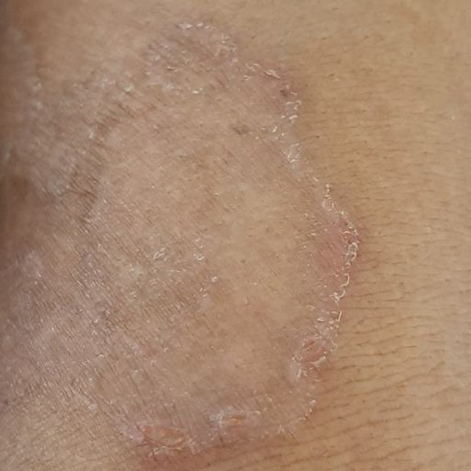
The photographa demo photograph of tinea
To the computer, numbersthe brightness of each pixel, 0 to 255
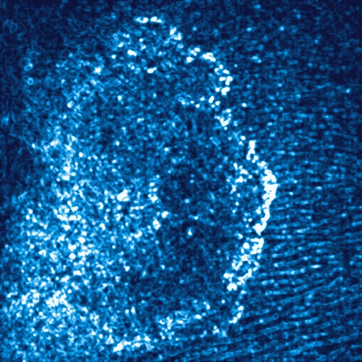
Layer 1edges · redness
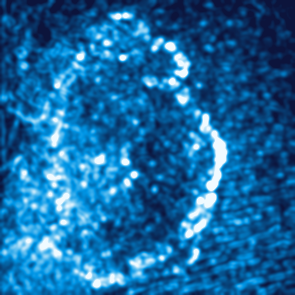
Deeper layerstexture (scale), then the ring-shaped patch
Diagnosis
a probability for each condition (illustration)
The maps are classic image filters run on this photograph, to show the kind of pattern each layer picks out; a trained CNN learns its own filters.
Limitations encountered · overfitting
Illustration of overfitting
How MNKAI-III works
The students
PanDerm
foundation model, frozen
over two million images10
 a demo photograph
a demo photographFeature vector
6,144 numbers
Ensembling12 · average of the five
Calibration18 · temperature scaling, T = 0.59
0.30 → 0.59; shown as 68% after a fixed adjustment per condition
What: one number rescales all 29 probabilities together. Why: so that a stated 70% is right about 70% of the time. On held-back photographs the calibration error fell 0.24 → 0.02.
System output
1 Lichen planus 68% 2 Eczema 15% 3 Psoriasis 6%
Lichen planus · Eczema · Psoriasis · Benign keratosis (meant to hold the answer 9 times in 10)
Declined: the five classifiers disagree, so specialist review is advised
91% inflammatory
Amber: cancer not ruled out
Stored for the study · not shown to the treating team
A classifier too
Cancer check
simpler, on the same feature vector; a score, not a probability
score 0.27 → amber
The 29 conditions the system can name
| Group | Conditions |
|---|---|
| Skin cancer and precancer | Melanoma; basal cell carcinoma; squamous cell carcinoma; actinic keratosis |
| Benign growths | Melanocytic naevus; benign keratosis; dermatofibroma; vascular lesion (its training images include Kaposi sarcoma) |
| Infections and infestations | Bacterial infection; viral infection; tinea; candidiasis; pityriasis versicolor; scabies, bites and infestations |
| Eczema and other inflammatory conditions | Eczema; contact dermatitis; seborrhoeic dermatitis; psoriasis; lichen planus; pityriasis rosea; urticaria; drug eruption; acne; rosacea |
| Autoimmune and blistering disease | Pemphigus and bullous disease; lupus, vasculitis and connective tissue disease |
| Pigment and hair | Vitiligo; alopecia |
| Normal | Normal skin |
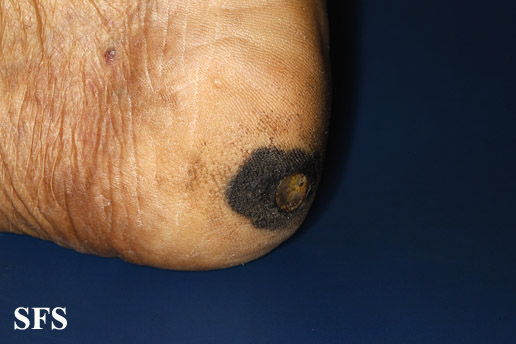
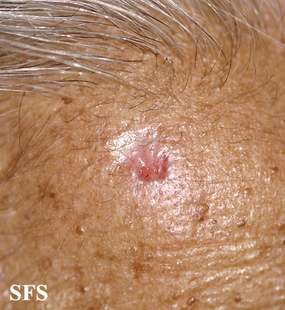
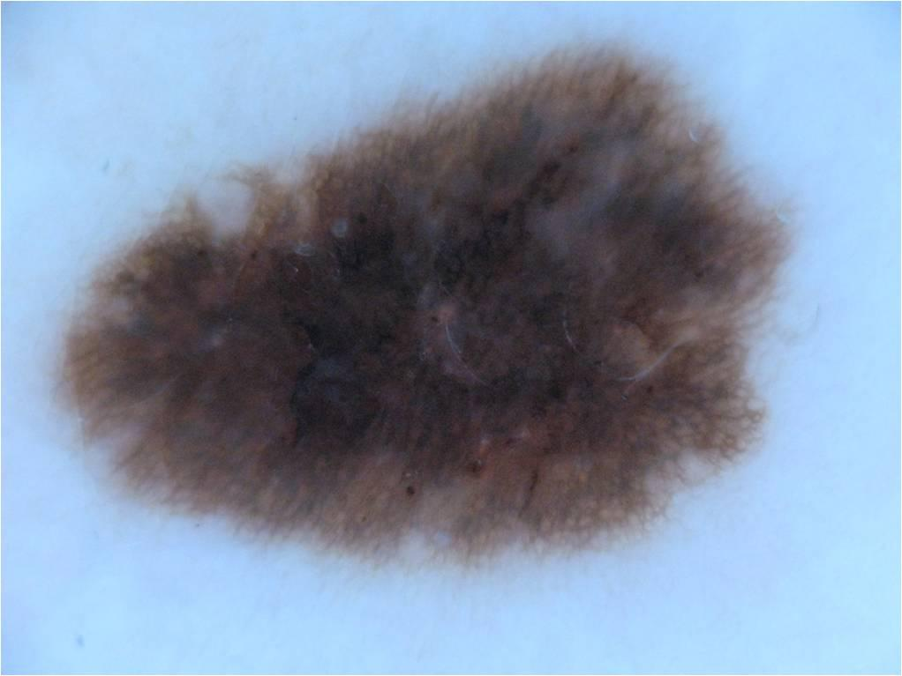
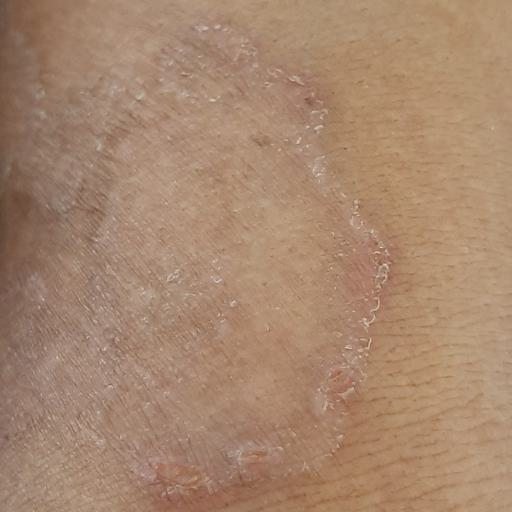
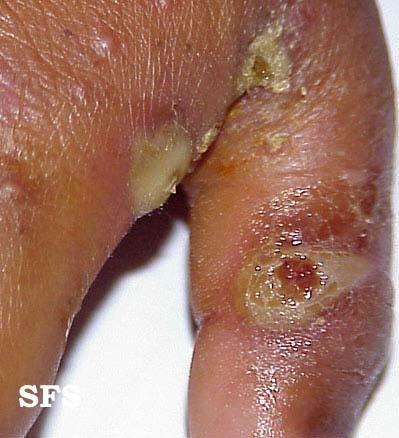
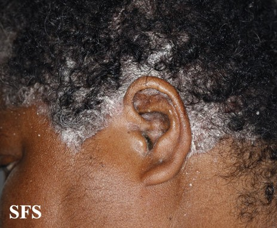
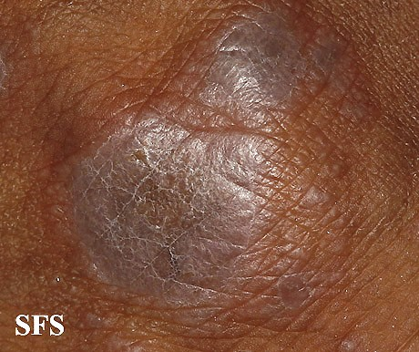
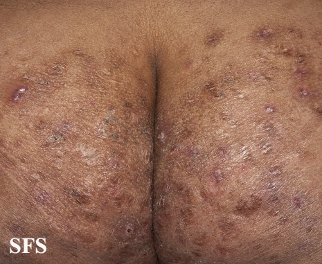
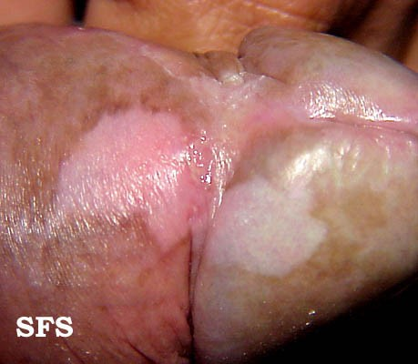
What each condition group includes · Appendix B (1 of 2)
| Group | Photographs learned under this group |
|---|---|
| Melanoma | Melanoma, including lentigo maligna and acral lentiginous melanoma |
| Basal cell carcinoma | Basal cell carcinoma |
| Squamous cell carcinoma | Squamous cell carcinoma, keratoacanthoma, Bowen's disease, erythroplasia, verrucous carcinoma |
| Actinic keratosis | Actinic (solar) keratosis |
| Melanocytic naevus | Common, atypical, compound, junctional and intradermal naevi |
| Benign keratosis | Seborrhoeic keratosis (including dermatosis papulosa nigra and stucco keratosis), solar lentigo, lichen planus-like keratosis |
| Dermatofibroma | Dermatofibroma |
| Vascular lesion | Haemangioma, pyogenic granuloma, angiokeratoma, venous lake, port-wine stain, lymphangioma, telangiectasia; also Kaposi sarcoma |
| Bacterial infection | Impetigo, cellulitis, erysipelas, folliculitis, furuncle, carbuncle, abscess, ecthyma, erythrasma, pitted keratolysis; also leprosy, syphilis and other sexually transmitted infections, Lyme disease and atypical mycobacterial infection |
| Viral infection | Warts (including genital warts), molluscum contagiosum, herpes simplex, herpes zoster, varicella, mpox, hand, foot and mouth disease, measles and other viral exanthems |
| Tinea | Tinea corporis, cruris, pedis, faciei, manuum and capitis (including kerion), steroid-modified tinea, onychomycosis, Majocchi granuloma |
| Candidiasis | Cutaneous candidiasis, candidal intertrigo, angular cheilitis, oral thrush |
| Pityriasis versicolor | Pityriasis versicolor |
| Scabies, bites and infestations | Scabies, head lice, insect and tick bites, stings, cutaneous larva migrans, bed bugs |
| Eczema | Atopic, nummular, dyshidrotic, asteatotic and hand and foot eczema, stasis dermatitis, lichen simplex chronicus, prurigo, pityriasis alba, xerosis |
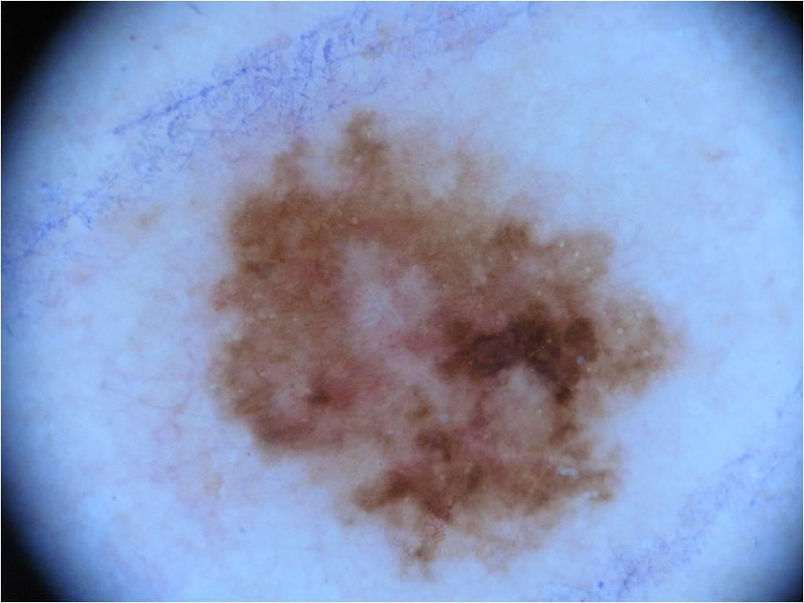
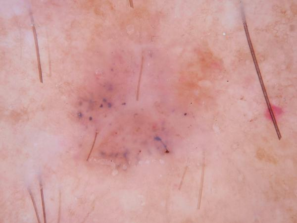
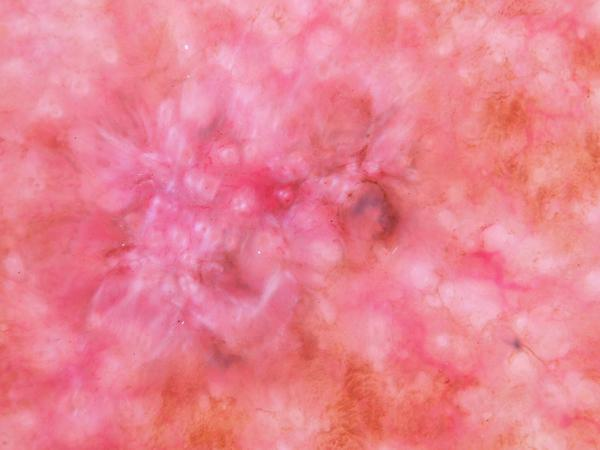
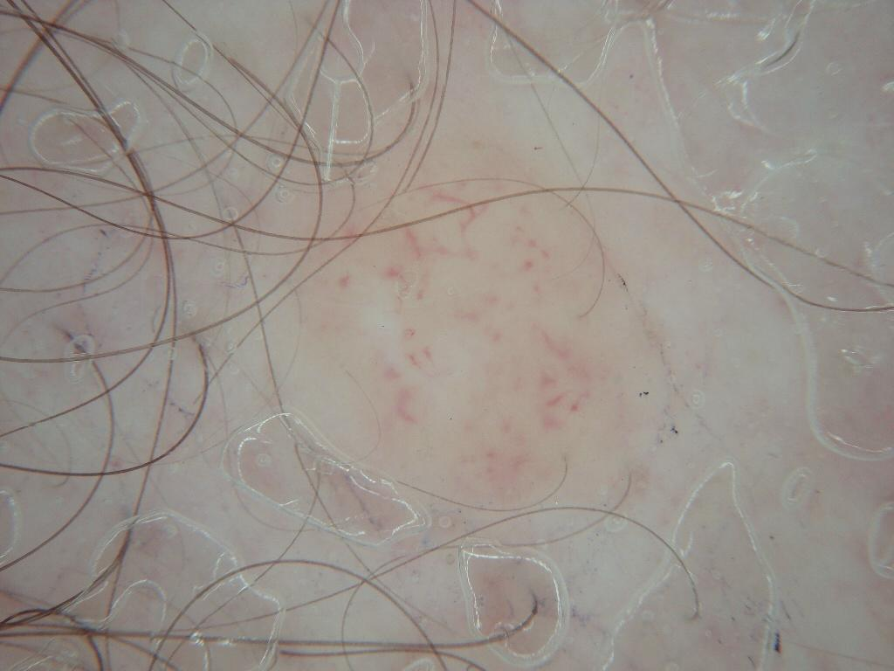
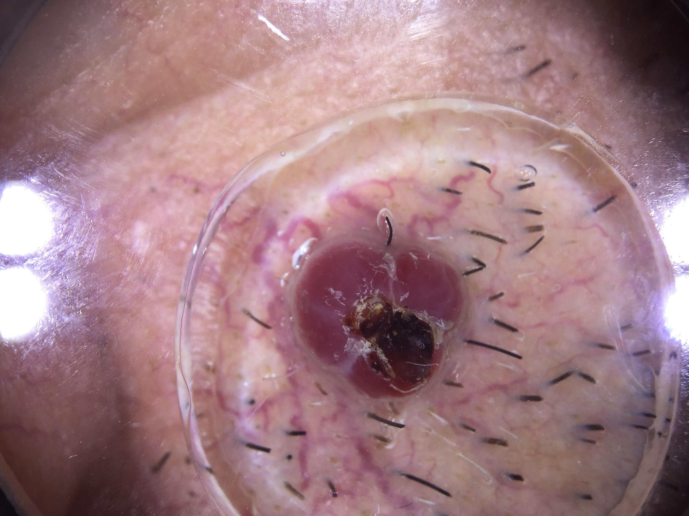
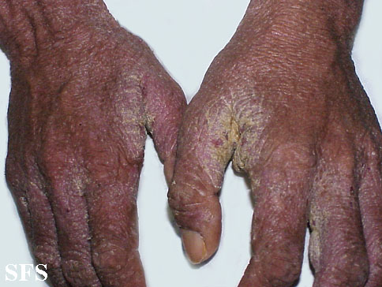
What each condition group includes · Appendix B (2 of 2)
| Group | Photographs learned under this group |
|---|---|
| Contact dermatitis | Allergic and irritant contact dermatitis, including napkin dermatitis |
| Seborrhoeic dermatitis | Seborrhoeic dermatitis, including dandruff |
| Psoriasis | Psoriasis of all types |
| Lichen planus | Lichen planus, lichen nitidus, lichenoid eruptions |
| Pityriasis rosea | Pityriasis rosea |
| Urticaria | Urticaria, angioedema, dermographism, polymorphic eruption of pregnancy |
| Drug eruption | Drug eruptions as labelled in the source collections |
| Acne | Acne vulgaris (comedonal, pustular and cystic), acne conglobata, hidradenitis suppurativa |
| Rosacea | Rosacea, rhinophyma, perioral dermatitis, steroid-induced rosacea |
| Pemphigus and bullous disease | Pemphigus vulgaris, bullous pemphigoid and other autoimmune blistering disease |
| Lupus, vasculitis and connective tissue disease | Discoid and systemic lupus, dermatomyositis, scleroderma and morphoea, vasculitis including Henoch–Schönlein purpura, livedo, Behçet's disease |
| Vitiligo | Vitiligo |
| Alopecia | Alopecia areata, telogen effluvium, trichotillomania and other hair loss |
| Normal skin | Skin without disease |
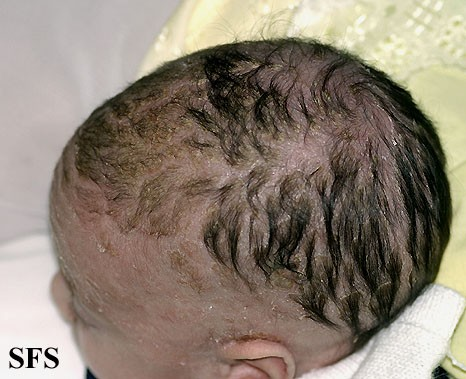
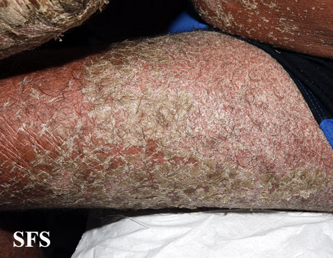

Image collections used for training · Appendix C
148,076
photographs with diagnoses attached, from public collections
- All from published research collections, each cited in the protocol (Appendix C), of the kind other groups have used to train and test CNNs and similar classifiers.
- The online material too: the collection gathered from medical articles, textbooks and online sources is itself a published, referenced research collection.17
- Nothing is synthetic: every image is a real photograph with its diagnosis attached; this is standard, accepted practice in published research.
- Many public collections share the same atlas photographs, so copies and near-copies were found by comparing the images numerically and kept together, so that, as far as this method can detect them, no copy of a test photograph was used to build the system.
Image collections used for training · Appendix C (1 of 2)
| Collection | Images | Training images (% of all) | Licence or terms | Status for this study |
|---|---|---|---|---|
| Derm1M | Captioned images from medical articles, textbooks, educational sites and online forums | 51,670 (34.9%) | CC BY-NC 4.0; access granted after accepting the dataset terms | Permitted for non-commercial research under the dataset licence; copyright in individual images stays with their original sources |
| ISIC Archive (International Skin Imaging Collaboration; includes the 2016–2020 challenge images) | Dermoscopic images, many confirmed by biopsy | 38,127 (25.7%) | Set per image: CC0, CC BY or CC BY-NC | Permitted for non-commercial research, with attribution |
| ISIC 2024 (SLICE-3D) | Lesion tiles from 3D total-body photography | 13,425 (9.1%) | CC BY-NC (a permissive subset CC BY) | Permitted for non-commercial research, with attribution |
| Fitzpatrick17k, DermaAmin atlas part | Clinical atlas images labelled with Fitzpatrick skin type | 3,728 (2.5%) | CC BY-NC-SA 3.0 | Permitted for non-commercial research, with attribution and share-alike |
| Mpox Skin Lesion Dataset v2.0 | Curated web images of mpox and similar rashes | 2,858 (1.9%) | CC BY-NC 4.0 | Permitted for non-commercial research, with attribution |
| PAD-UFES-20 | Smartphone clinical photographs, Brazil; skin cancers confirmed by biopsy | 1,996 (1.3%) | CC BY 4.0 | Permitted, with attribution |
Image collections used for training · Appendix C (2 of 2)
| Collection | Images | Training images (% of all) | Licence or terms | Status for this study |
|---|---|---|---|---|
| MILK10k (ISIC 2025) | Clinical and dermoscopic images, most confirmed by histopathology | 1,387 (0.9%) | CC BY-NC | Permitted for non-commercial research, with attribution |
| Oily, Dry and Normal Skin Types (Kaggle) | Normal skin | 1,132 (0.8%) | Uploader's licence Apache-2.0; original source not stated | Permitted for non-commercial research, with attribution |
| Derm7pt | Dermoscopic and clinical atlas images | 939 (0.6%) | Academic research use; no redistribution | Permitted for academic research; not redistributed |
| ISIC 2019, BCN20000 and HAM10000 | Dermoscopic images | 315 (0.2%) | CC BY-NC 4.0 | Permitted for non-commercial research, with attribution |
| Our Normal Skin (Kaggle) | Normal skin | 112 (0.1%) | No licence stated | Permitted for non-commercial research, with attribution |
| MED-NODE | Clinical images of melanoma and naevi | 86 (0.1%) | No licence stated; citation requested | Permitted for non-commercial research, with attribution |
Testing collections · Appendix C
Kept out of the 29-condition training: used to test the system, to build the cancer check, or for version 1.1.
| Collection | Use | Images | Licence or terms | Status for this study |
|---|---|---|---|---|
| Fitzpatrick17k, cleaned (CleanPatrick) | Training the cancer check | 5,517 | CC BY-NC-SA 3.0 | Permitted for non-commercial research, with attribution and share-alike |
| DermaCon-IN (South India) | Training version 1.1 (about 70% of patients) | 5,450 | CC BY-NC-SA 4.0 | Permitted for non-commercial research, with attribution and share-alike |
| PAD-UFES-20 | Training the cancer check | 2,271 | CC BY 4.0 | Permitted, with attribution |
| SkinDisNet (Bangladesh) | Outside test | 1,710 | CC BY-NC 4.0 | Permitted for non-commercial research, with attribution |
| Fitzpatrick17k, Atlas Dermatológico part | Outside test | 1,026 | CC BY-NC-SA 3.0 | Permitted for non-commercial research, with attribution and share-alike |
| Diverse Dermatology Images (DDI, Stanford) | Training and testing the cancer check, by cross-validation | 656 | Stanford research use agreement: non-commercial research, no redistribution, individual registration | Permitted under the agreement; images not redistributed |
Live demonstration · version 1.0, shown on the study laptop
Aim 2 · Data collection and photography
05
E. The data collection application
Data collection application · demonstrated live
Screen 1 · Information sheet in three languages
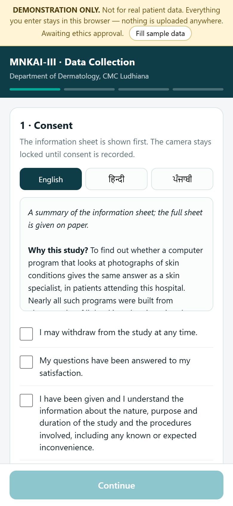
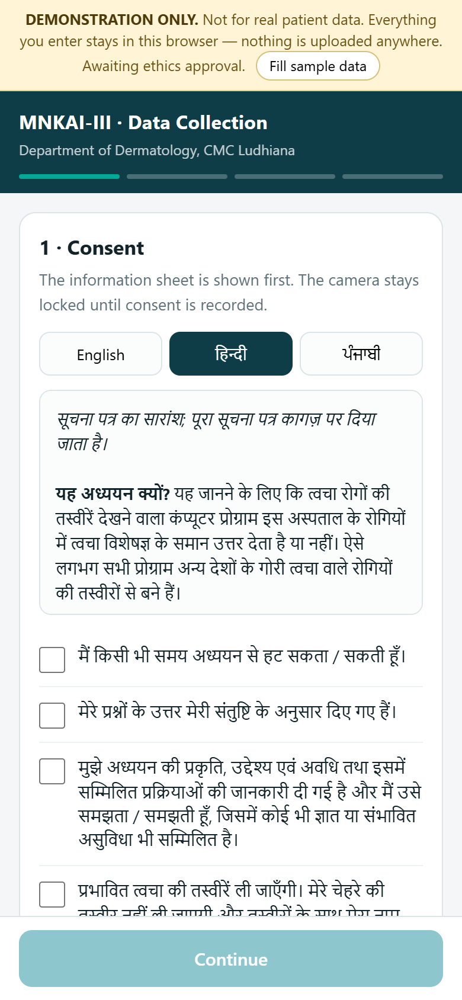
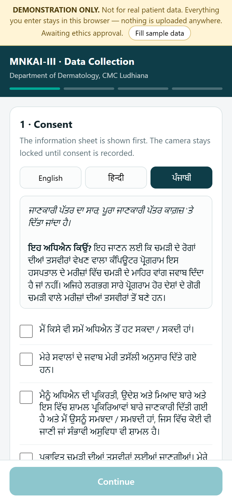
Proforma, Section 1
Screen 1 · Consent before the camera
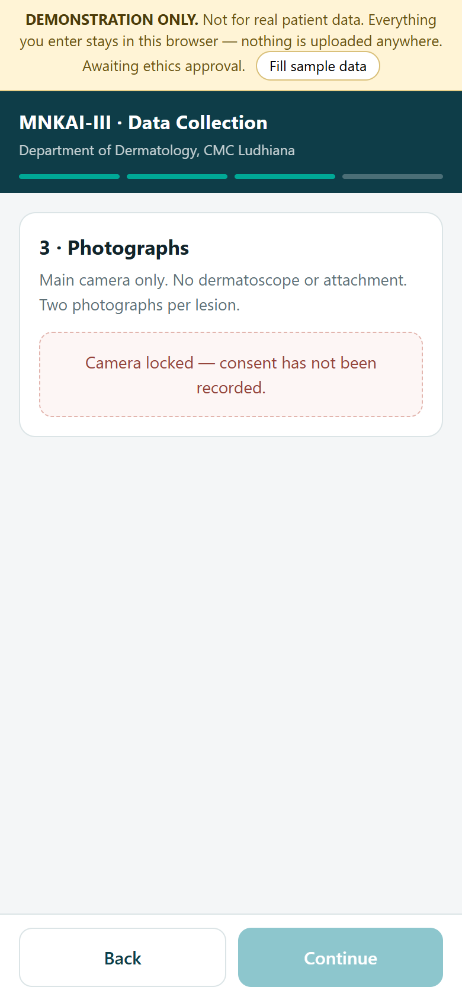
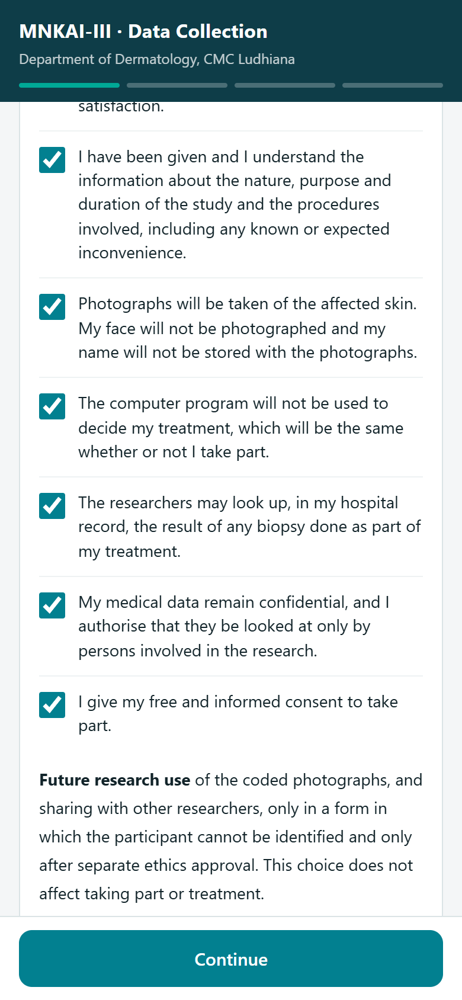
Locked
"Camera locked — consent has not been recorded."
Unlocked
Only after every item is ticked and the investigator confirms that the paper consent form is signed. The participant's name is never entered in the application.
Screen 2 · Clinical details and the locked diagnosis
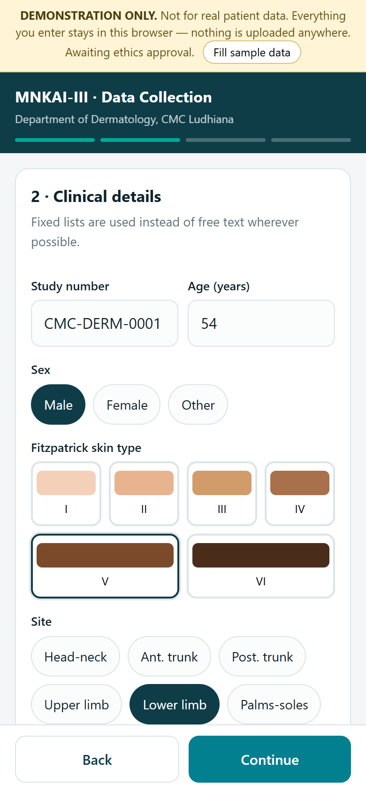
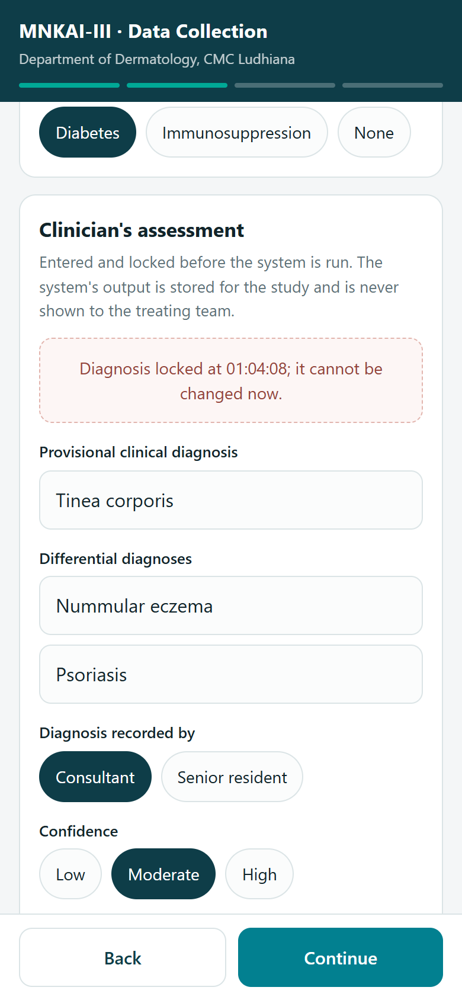
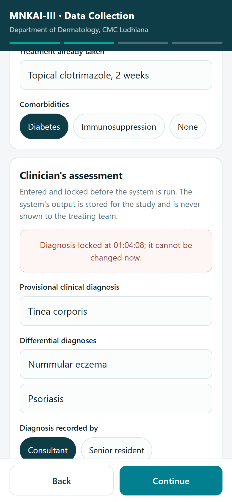
Study number, age, sex, Fitzpatrick type, site, side, duration, symptoms, change, treatment and comorbidities are chosen from fixed lists.
The dermatologist's diagnosis is entered and locked before the system can be run for that patient.
Screen 3 · Photographs and the quality check
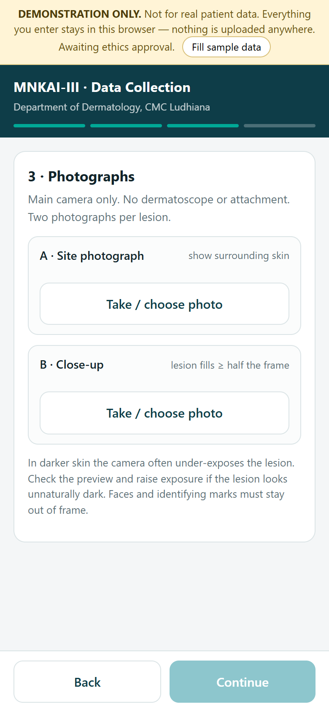
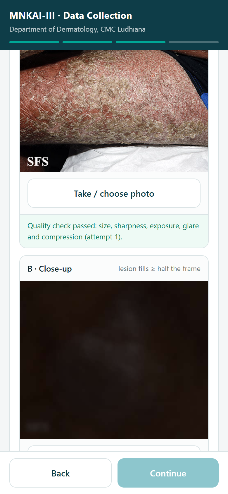
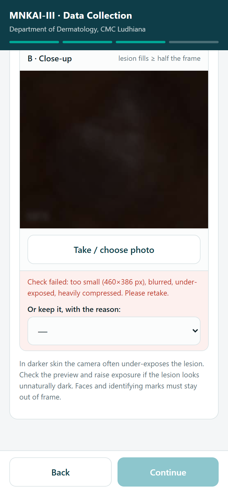
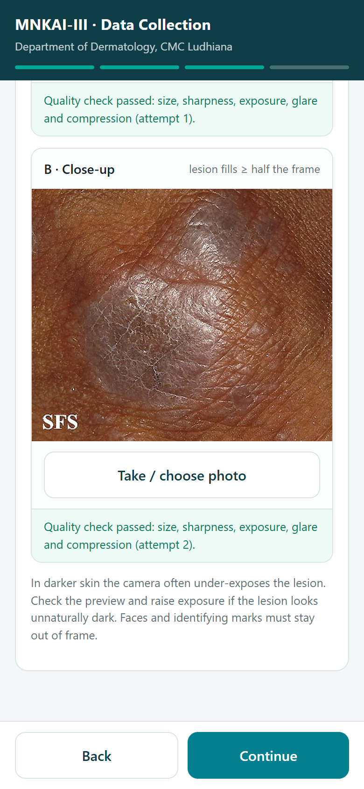
Screen 4 · Review and save
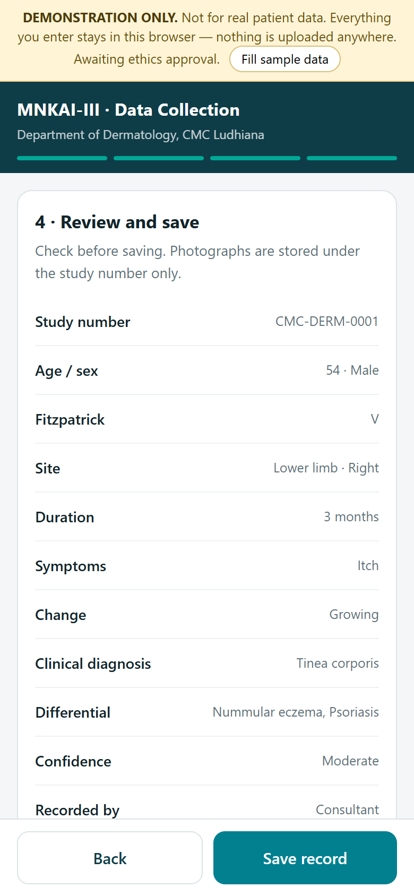
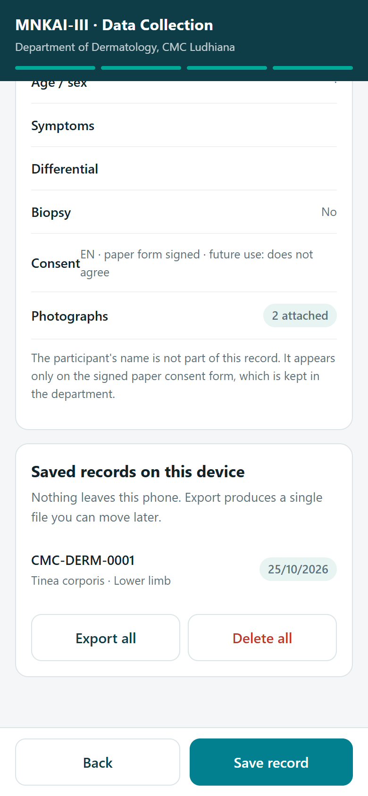
Every field is shown for checking. The participant's name is not part of the record.
The record is stored under the study number and copied to an institutional computer by USB cable. Nothing is sent over the internet, through a messaging application or to a personal cloud account.
Photographs of the index lesion
- Each patient contributes one index lesion: the lesion for which the patient attended or, if there are several, the one the dermatologist records first.
- Photographs will be taken on an ordinary smartphone of at least 12 megapixels under normal clinic lighting, using the main camera lens.
- No dermatoscope, spacer or other attachment will be used.
- This follows DermaCon-IN, which used ordinary smartphones under clinic lighting and treated the resulting variation as a fair reflection of clinical conditions.8
- Two photographs will be taken of the index lesion: one showing the site with surrounding skin, and one close-up in which the lesion fills at least half the frame.
- The device model is recorded with every photograph.
Section 3 · Photography (1 of 2)
Preparing the lesion and the camera
Section 3 · Photography (2 of 2)
Taking and checking the photographs
Statistical analysis
06
G. Primary outcome
- Top-3 agreement (primary): the dermatologist's diagnosis is among the system's three most likely, with an exact 95% confidence interval.
- Top-1 agreement: the system's first diagnosis is the dermatologist's, with an exact 95% confidence interval.
- Cohen's kappa: agreement beyond chance on the single most likely diagnosis, across the 29 conditions plus "not on the list".
- Ranked list: scored whether or not the system declined to give a single answer.
- Unit of analysis: the close-up photograph of one index lesion per patient; the site photograph is secondary.
- Matching: to the 29 conditions by Appendix B, by someone who has not seen the output; not on the list counts as disagreement.
Outcomes
- Version 1.0 against 1.1: both run on every patient; only the patients on whom they disagree decide which is better (McNemar's test). This is a secondary result.
- Skin type: accuracy compared across three groups fixed in advance, I–III, IV and V–VI, because few patients here are type I or II (chi-square, or Fisher's exact test when numbers are small).
- Missing results: photographs still unusable after two attempts are reported (objective 9); if the system gives no output, the case counts as disagreement.
- Provisional diagnoses stay in the main analysis, with a second analysis without them.
- p < 0.05 is significant; subgroup results are exploratory. Chi-square and Fisher's tests in IBM SPSS 26, the rest in R.
Ethics and data
07
Patient safety
Care remains unchanged
A silent trial: the output never reaches the treating team, and no patient's management changes because of the study.15
No additional procedures or costs
No investigation, procedure, medicine or extra visit is added, and no patient is charged anything.
Data retained within the institution
The system runs on one laptop with no internet connection, kept in the department with encrypted storage.
Section 4 · Data handling and confidentiality
Data handling · 1 of 7 · Stored under the study number
A photograph as taken
Name
Telephone
Address
Camera metadata · location, time
As stored
MNK-0042 · site.jpg
study number only
Unit number
recorded, so that the histopathology report can be added to the record later
In the application: each photograph is re-saved from the image itself, so camera metadata such as location and time is not kept; the device model is recorded separately.
Data handling · 2 of 7 · The link list
Data handling · 3 of 7 · Stored inside the institution
Data handling · 4 of 7 · Consent kept apart
Data handling · 5 of 7 · Withdrawal
Asks to withdraw
at any time, without giving a reason
Study number found
through the link list
Data deleted
photographs and record removed from the repository
Care continues
treatment is the same either way
Data handling · 6 of 7 · Nothing identifiable, marks masked
Data handling · 7 of 7 · The law and the committee
Reporting standards · STARD 2015 and STARD-AI
The study is designed, and will be reported, according to STARD 201519 and its extension for artificial intelligence, STARD-AI.20
STARD · Standards for Reporting of Diagnostic Accuracy Studies
STARD-AI · Standards for Reporting of Diagnostic Accuracy Studies – Artificial Intelligence
STARD 2015 asks for · where this protocol provides it
- Consecutive eligible patients, and their flowscreening log of every patient screened (A)
- A reference standard read without the system's resultdiagnosis entered and locked before the system runs (F)
- Cut-offs fixed in advanceamber and red levels, set before the first patient (D)
- The intended sample size and how it was set196 analysable patients (C)
- Accuracy with 95% confidence intervalsevery proportion (G)
- Unusable and missing resultscounted and reported, not dropped (G)
STARD-AI adds, for example
- The exact version of the AI systemversions 1.0 and 1.1 fixed by checksum before month 1
- The data the AI was built fromevery collection listed in Appendix C
- How images are taken and quality-checkedSection 3 and the application's quality check
Nothing to register for STARD: it is a checklist for the write-up. Now, the protocol is designed to it; after approval and the study, the results are reported item by item, with both completed checklists submitted with the paper.
Sample study results
08
Results on held-back and unseen photographs
top-3 agreement
Disease group right · exact condition in grey
Held back
Atlas, unseen
Bangladesh, unseen
of infections in Bangladesh placed in the inflammatory group: a steroid on tinea or scabies
The Bangladesh collection and the case for version 1.1
54.9%
top-3 agreement on the collection closest to a North Indian outpatient department that could be tested. This is where the system is weakest.
1,710 photographs of 416 patients, ordinary smartphones, two medical colleges in Bangladesh.14
Why it was weak
- It called almost everything eczema: 45% of all photographs, including 42% of tinea. In practice, that means a steroid on a fungal infection.
- It mixed up look-alike rashes: it recognised only 20% of tinea, 6% of contact dermatitis and 0% of seborrhoeic dermatitis.
- Clinic photographs look different: the lighting, framing and background are not like the collections it learned from.
- It had seen few patients like these: it was built mostly from collections outside India.
Version 1.1
This is why we will also test version 1.1: the same system, trained additionally on photographs of Indian patients.
DermaCon-IN: 5,450 smartphone images of 3,002 patients from South Indian outpatient clinics.8
Both versions run on the same patients here (objective 5). Version 1.1 has not yet been built or validated; this study is the first test of whether training on Indian patients helps.
Cancer check on 656 biopsy-proven photographs4, compared with published systems
Area under the ROC curve (cancer vs non-cancer) · 0.50 is chance
| Skin-tone group | Best published system | Ours, built with these photographs | Ours, built without them |
|---|---|---|---|
| All skin tones | — | 0.76 | 0.60 |
| I–II · lightest | 0.72 | 0.72 | 0.59 |
| III–IV | — | 0.76 | 0.68 |
| V–VI · darkest | 0.57 | 0.80 | 0.48 |
On the darkest skin: 0.80 against 0.57 for the best published system
- Built with: trained and tested on DDI photographs by nested cross-validation (five parts).
- Built without: no DDI photograph used, like the published systems.
- Part of the gain may be DDI's own hospital and cameras; on V–VI, 26 of the 48 cancers were mycosis fungoides. No significant difference by skin tone was shown.
Other published results on the same collection
| System | Setting | All | I–II | III–IV | V–VI |
|---|---|---|---|---|---|
| Concept model on DeepDerm24 | no DDI training | 0.64 | 0.64 | 0.73 | 0.54 |
| ResNeXt + synthetic images25 | no DDI training | — | 0.72 | 0.78 | 0.58 |
| Published systems, fine-tuned4 | trained on DDI | — | — | — | ≈0.76–0.78 |
| SwinV2, fine-tuned26 | trained on DDI, 20% test | — | 0.81 | — | 0.90 |
| FairDisCo27 | trained on DDI, 20% test | 0.85 | — | — | — |
| PanDerm10 | linear probe on DDI | 0.84 | — | — | — |
ours higherours lower against our matching column: no DDI training ↔ built without; trained on DDI ↔ built with
- Not like-for-like: different splits and test sizes; reference 25's skin types may be predicted; PanDerm's DDI task was melanoma versus the rest.
The two levels of the cancer check
The cancer check gives every photograph a score between 0 and 1. It is not the chance of cancer: it only orders photographs from least to most suspicious. Two cut-offs on that score were fixed before the study.
Below 0.058 · reassuring
The amber cut-off is the score above which nine in ten of the biopsy-proven cancers fell, out of fold in the 656 photographs.
0.058 to 0.708 · amber, cancer not ruled out
The safety net: it caught 91% of cancers, but cleared only 38% of benign lesions.
Above 0.708 · red, possible cancer
The score below which nine in ten benign lesions fell: only about one harmless lesion in ten reaches it. It caught 40% of the biopsy-proven cancers and 81% of unseen atlas cancers.
In the study both cut-offs stay fixed, are measured against histopathology, and are recorded only: they never replace the dermatologist's judgement.
Safety behaviour
What the system does when it is not sure, per 100 held-back photographs.
Answered 75% · right 91%
One answer only when sure.
Declined the rest · its guess right only 50%
Declining protected the patient; it advises specialist review instead.
Short list held the answer 94%
Target 90%, with 2.4 conditions on average.
Calibration error 0.24 → 0.02
A stated 70% is now right about 70% of the time.
Held-back photographs only; calibration was not measured on the outside collections and is likely to be poorer on clinic photographs, which objective 4 measures here.
Photograph quality
Poor photographs cost accuracy. The same photograph, degraded the ways the test degraded 1,000 held-back photographs:
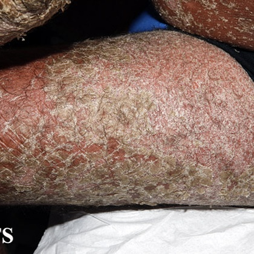
Original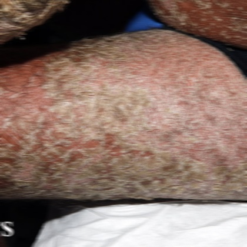
Moderate blur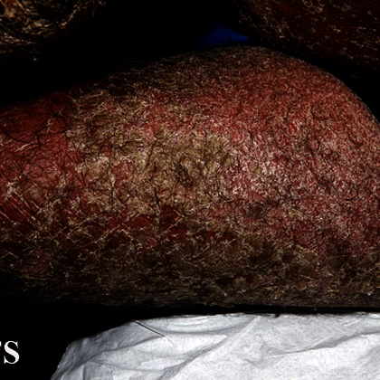
Dim light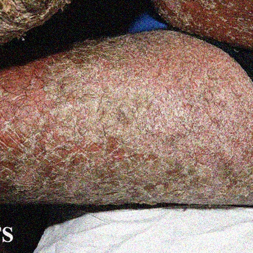
Grainy imageOutpatient photographs differ in lighting, framing and artefact; hence a quality check before every analysis, and a photography protocol. Training on degraded copies cut these losses (0.62 → 0.73) but was not adopted: it lowered the atlas result more than our pre-set rule allowed.
Macro-F1 on 1,000 held-back photographs, each degraded on purpose; the pictures are one demo photograph with the same degradations.
Conclusion
09
Novelty · what is new in this work
Study
First prospective test in North India
A silent trial on consecutive patients, against a dermatologist.
Design
Two frozen versions, same patients
Version 1.0 against 1.1, trained additionally on Indian images: a direct, paired measure of whether local data help.
Safety
Confidence reported, not just a label
Calibrated probabilities, a 90% short list, declining when unsure, and disease groups, measured together on patients.
Rigour
Leak-proof development
Near-copies kept together, settings chosen out of fold, rules written before results, every number traced to a ledger, versions fixed by checksum.
Data
A consent-first collection app
Camera locked until consent, diagnosis locked before analysis, photographs checked on the device: the first North Indian skin photograph collection.
Novelty · Fair Conformal Interviewing
A new method, in plain words. Tested only on computer-simulated patients; not used in this study.
The problem
When unsure, the system gives a short list meant to hold the right diagnosis 9 times in 10. On average it does, but on darker skin it can miss more often, or need a longer list.
A separate promise for each skin tone
The 9-in-10 rule is set separately for each skin-tone group, so no group is short-changed.
Ask a few questions, as a doctor would
A few history questions, such as itch or duration, are chosen to shorten the list.
A fair share of questions
Groups whose lists start longer get more questions, so the lists end up equally short for every skin tone.
1,000 simulated runs · the harder skin-tone group
the harder group's list held the answer less often (gap -0.16)
right as often, but lists 2.23 conditions longer
right 90% of the time; lists almost equal (gap 0.15); about 3.9 questions
Status: simulated data only; not part of version 1.0 and not used in this study. A literature check found no published method combining all three parts; the novelty is the combination.
On photographs like those it was built from, the system usually puts the correct diagnosis among its first three, its stated confidence matched its accuracy, and it declined cases it was unsure of.
Its cancer check held up on dark skin because it was built with biopsy-confirmed photographs of every skin tone; it still raises many false alarms.
On smartphone photographs from Bangladesh, the setting closest to ours, its accuracy fell sharply.
How it performs on patients in North India, here in Ludhiana, is therefore unknown, and is what this study will find out.
- Esteva A, Kuprel B, Novoa RA, Ko J, Swetter SM, Blau HM, et al. Dermatologist-level classification of skin cancer with deep neural networks. Nature. 2017;542(7639):115-118.
- Tschandl P, Rosendahl C, Kittler H. The HAM10000 dataset, a large collection of multi-source dermatoscopic images of common pigmented skin lesions. Sci Data. 2018;5:180161.
- Groh M, Harris C, Soenksen L, Lau F, Han R, Kim A, et al. Evaluating deep neural networks trained on clinical images in dermatology with the Fitzpatrick 17k dataset. Proc IEEE/CVF Conf Comput Vis Pattern Recognit Workshops. 2021;1820-1828.
- Daneshjou R, Vodrahalli K, Novoa RA, Jenkins M, Liang W, Rotemberg V, et al. Disparities in dermatology AI performance on a diverse, curated clinical image set. Sci Adv. 2022;8(32):eabq6147.
- Gupta AK, Bharadwaj M, Mehrotra R. Skin cancer concerns in people of color: risk factors and prevention. Asian Pac J Cancer Prev. 2016;17(12):5257-5264.
- Panda S, Dash S, Besra K, Samantaray S, Pathy PC, Rout N. Clinicopathological study of malignant melanoma in a regional cancer center. Indian J Cancer. 2018;55(3):292-296.
- Daneshjou R, Smith MP, Sun MD, Rotemberg V, Zou J. Lack of transparency and potential bias in artificial intelligence data sets and algorithms: a scoping review. JAMA Dermatol. 2021;157(11):1362-1369.
- Madarkar SS, Madarkar M, Venkatesh M, Bansal D, Prakash T, Mopuri KR, et al. DermaCon-IN: a multi-concept annotated dermatological image dataset of Indian skin disorders for clinical AI research. arXiv:2506.06099. 2025.
- Pacheco AGC, Lima GR, Salomao AS, Krohling B, Biral IP, de Angelo GG, et al. PAD-UFES-20: a skin lesion dataset composed of patient data and clinical images collected from smartphones. Data Brief. 2020;32:106221.
- Yan S, Yu Z, Primiero C, Vico-Alonso C, Wang Z, Yang L, et al. A multimodal vision foundation model for clinical dermatology. Nat Med. 2025;31(8):2691-2702.
- Kumar A, Raghunathan A, Jones R, Ma T, Liang P. Fine-tuning can distort pretrained features and underperform out-of-distribution. Int Conf Learn Represent (ICLR). 2022.
- Lakshminarayanan B, Pritzel A, Blundell C. Simple and scalable predictive uncertainty estimation using deep ensembles. Adv Neural Inf Process Syst. 2017;30:6402-6413.
- Angelopoulos AN, Bates S, Malik J, Jordan MI. Uncertainty sets for image classifiers using conformal prediction. Int Conf Learn Represent (ICLR). 2021.
- Sultana M, Sajib RH, Badhan IA, Ahmed M, Bushra MY. SkinDisNet: a comprehensive dataset of clinical images and metadata for skin disease detection and classification. Data Brief. 2025;63:112239.
- Kwong JCC, Erdman L, Khondker A, Skreta M, Goldenberg A, McCradden MD, et al. The silent trial - the bridge between bench-to-bedside clinical AI applications. Front Digit Health. 2022;4:929508.
- Daniel WW, Cross CL. Biostatistics: a foundation for analysis in the health sciences. 11th ed. Hoboken (NJ): Wiley; 2018.
- Yan S, Hu M, Jiang Y, Li X, Fei H, Tschandl P, et al. Derm1M: a million-scale vision-language dataset aligned with clinical ontology knowledge for dermatology. Proc IEEE/CVF Int Conf Comput Vis (ICCV). 2025. p. 12681-12690.
- Guo C, Pleiss G, Sun Y, Weinberger KQ. On calibration of modern neural networks. Proc 34th Int Conf Mach Learn. 2017;70:1321-1330.
- Bossuyt PM, Reitsma JB, Bruns DE, Gatsonis CA, Glasziou PP, Irwig L, et al. STARD 2015: an updated list of essential items for reporting diagnostic accuracy studies. BMJ. 2015;351:h5527.
- Sounderajah V, Guni A, Liu X, Collins GS, Karthikesalingam A, Markar SR, et al. The STARD-AI reporting guideline for diagnostic accuracy studies using artificial intelligence. Nat Med. 2025;31(10):3283-3289.
- Indian Council of Medical Research. National ethical guidelines for biomedical and health research involving human participants. New Delhi: ICMR; 2017.
- Indian Council of Medical Research. Ethical guidelines for application of artificial intelligence in biomedical research and healthcare. New Delhi: ICMR; 2023.
- Ministry of Electronics and Information Technology, Government of India. The Digital Personal Data Protection Act, 2023 (No. 22 of 2023). New Delhi: Government of India; 2023.
- Daneshjou R, Yuksekgonul M, Cai ZR, Novoa RA, Zou J. SkinCon: a skin disease dataset densely annotated by domain experts for fine-grained debugging and analysis. Adv Neural Inf Process Syst (Datasets and Benchmarks). 2022.
- Munia N, Imran A-A-Z. DermDiff: generative diffusion model for mitigating racial biases in dermatology diagnosis. arXiv:2503.17536. 2025.
- Chiu M-C, Wang Y, Kuo Y-J, Chen P-Y. DDI-CoCo: a dataset for understanding the effect of color contrast in machine-assisted skin disease detection. IEEE ICASSP. 2024.
- Du S, Hers B, Bayasi N, Hamarneh G, Garbi R. FairDisCo: fairer AI in dermatology via disentanglement contrastive learning. ECCV Workshops. 2022.
References 1–23 as in the protocol; 24–27 are used only on the comparison slide.
Participant documents
Informed consent forms, patient information sheets and the proforma, as in the protocol.
INFORMED CONSENT FORM
Study number: .................................... Date: ....................................
I, .................................................... do hereby consent to participate in the study named, "PROSPECTIVE CLINICAL VALIDATION OF AN ARTIFICIAL INTELLIGENCE SYSTEM FOR THE ASSESSMENT OF SKIN DISEASE AND SKIN CANCER IN INDIAN PATIENTS".
1. I understand that I can freely withdraw from this study at any time.
2. I have had a chance to ask questions and all of my questions have been answered to my satisfaction.
3. I have been given and I understand the information concerning the nature, purpose and duration of the study and the procedures involved, including any known or expected inconvenience.
4. I understand that photographs will be taken of the affected area of my skin, that the photographs will not show my identity, and that my name will not be stored with the photographs.
5. I understand that the computer program being studied will not be used to decide my treatment, and that my treatment will be the same whether or not I take part.
6. I understand that my coded photographs may be kept for future research and shared with other researchers in a form in which I cannot be identified, only after separate approval from the Institutional Ethics Committee. My choice below does not affect my taking part in this study or my treatment. ☐ I agree ☐ I do not agree
7. I agree that the researchers may look up, in my hospital record, the result of any biopsy done as part of my treatment.
8. My medical data remains confidential and I authorize that they be looked at only by persons involved in the research.
9. By signing this form, I give my free and informed consent to take part in this study.
(Signature / thumb impression of the participant)
Name of the participant: ....................................
Phone number: ....................................
Date: .................................... Place: ....................................
Signature of impartial witness (if the participant cannot read): ....................................
Name of witness: .................................... Date: ....................................
Signature of investigator: ....................................
Date: ....................................
सूचित सहमति प्रपत्र
अध्ययन क्रमांक: .................................... दिनांक: ....................................
मैं, .................................................... इस अध्ययन में भाग लेने के लिए सहमति देता / देती हूँ, जिसका नाम है "भारतीय रोगियों में त्वचा रोग एवं त्वचा कैंसर के आकलन हेतु कृत्रिम बुद्धिमत्ता प्रणाली का संभाव्य नैदानिक सत्यापन"।
1. मैं समझता / समझती हूँ कि मैं किसी भी समय स्वेच्छा से इस अध्ययन से हट सकता / सकती हूँ।
2. मुझे प्रश्न पूछने का अवसर मिला है और मेरे सभी प्रश्नों के उत्तर मेरी संतुष्टि के अनुसार दिए गए हैं।
3. मुझे अध्ययन की प्रकृति, उद्देश्य एवं अवधि तथा इसमें सम्मिलित प्रक्रियाओं की जानकारी दी गई है और मैं उसे समझता / समझती हूँ, जिसमें कोई भी ज्ञात या संभावित असुविधा भी सम्मिलित है।
4. मैं समझता / समझती हूँ कि मेरी त्वचा के प्रभावित भाग की तस्वीरें ली जाएँगी, तस्वीरों में मेरी पहचान दिखाई नहीं देगी, तथा तस्वीरों के साथ मेरा नाम संग्रहीत नहीं किया जाएगा।
5. मैं समझता / समझती हूँ कि जिस कंप्यूटर प्रोग्राम का अध्ययन किया जा रहा है, उसका उपयोग मेरे उपचार का निर्णय लेने के लिए नहीं किया जाएगा, और मेरा उपचार वैसा ही रहेगा चाहे मैं भाग लूँ अथवा न लूँ।
6. मैं समझता / समझती हूँ कि मेरी कोड की गई तस्वीरें भविष्य के शोध हेतु रखी जा सकती हैं तथा अन्य शोधकर्ताओं के साथ ऐसे रूप में साझा की जा सकती हैं जिसमें मेरी पहचान न हो सके, और यह केवल संस्थागत आचार समिति की पृथक अनुमति के पश्चात ही होगा। नीचे दिया गया मेरा निर्णय इस अध्ययन में मेरी भागीदारी अथवा मेरे उपचार को प्रभावित नहीं करेगा। ☐ मैं सहमत हूँ ☐ मैं सहमत नहीं हूँ
7. मैं सहमति देता / देती हूँ कि मेरे उपचार के अंतर्गत की गई किसी भी बायोप्सी (त्वचा के टुकड़े की जाँच) का परिणाम शोधकर्ता मेरे अस्पताल रिकॉर्ड से देख सकते हैं।
8. मेरा चिकित्सीय विवरण गोपनीय रहेगा और मैं अधिकृत करता / करती हूँ कि इसे केवल शोध से जुड़े व्यक्ति ही देखें।
9. इस प्रपत्र पर हस्ताक्षर करके मैं इस अध्ययन में भाग लेने हेतु अपनी स्वतंत्र एवं सूचित सहमति देता / देती हूँ।
(प्रतिभागी के हस्ताक्षर / अंगूठे का निशान)
प्रतिभागी का नाम: ....................................
दूरभाष क्रमांक: ....................................
दिनांक: .................................... स्थान: ....................................
निष्पक्ष साक्षी के हस्ताक्षर (यदि प्रतिभागी पढ़ नहीं सकते): ....................................
साक्षी का नाम: .................................... दिनांक: ....................................
अन्वेषक के हस्ताक्षर: ....................................
दिनांक: ....................................
ਸੂਚਿਤ ਸਹਿਮਤੀ ਫਾਰਮ
ਅਧਿਐਨ ਨੰਬਰ: .................................... ਮਿਤੀ: ....................................
ਮੈਂ, .................................................... ਇਸ ਅਧਿਐਨ ਵਿੱਚ ਭਾਗ ਲੈਣ ਲਈ ਸਹਿਮਤੀ ਦਿੰਦਾ / ਦਿੰਦੀ ਹਾਂ, ਜਿਸਦਾ ਨਾਮ ਹੈ "ਭਾਰਤੀ ਮਰੀਜ਼ਾਂ ਵਿੱਚ ਚਮੜੀ ਦੇ ਰੋਗਾਂ ਅਤੇ ਚਮੜੀ ਦੇ ਕੈਂਸਰ ਦੇ ਮੁਲਾਂਕਣ ਲਈ ਆਰਟੀਫੀਸ਼ੀਅਲ ਇੰਟੈਲੀਜੈਂਸ ਪ੍ਰਣਾਲੀ ਦੀ ਸੰਭਾਵੀ ਕਲੀਨਿਕਲ ਪੁਸ਼ਟੀ"।
1. ਮੈਂ ਸਮਝਦਾ / ਸਮਝਦੀ ਹਾਂ ਕਿ ਮੈਂ ਕਿਸੇ ਵੀ ਸਮੇਂ ਆਪਣੀ ਮਰਜ਼ੀ ਨਾਲ ਇਸ ਅਧਿਐਨ ਤੋਂ ਹਟ ਸਕਦਾ / ਸਕਦੀ ਹਾਂ।
2. ਮੈਨੂੰ ਸਵਾਲ ਪੁੱਛਣ ਦਾ ਮੌਕਾ ਮਿਲਿਆ ਹੈ ਅਤੇ ਮੇਰੇ ਸਾਰੇ ਸਵਾਲਾਂ ਦੇ ਜਵਾਬ ਮੇਰੀ ਤਸੱਲੀ ਅਨੁਸਾਰ ਦਿੱਤੇ ਗਏ ਹਨ।
3. ਮੈਨੂੰ ਅਧਿਐਨ ਦੀ ਪ੍ਰਕਿਰਤੀ, ਉਦੇਸ਼ ਅਤੇ ਮਿਆਦ ਬਾਰੇ ਅਤੇ ਇਸ ਵਿੱਚ ਸ਼ਾਮਲ ਪ੍ਰਕਿਰਿਆਵਾਂ ਬਾਰੇ ਜਾਣਕਾਰੀ ਦਿੱਤੀ ਗਈ ਹੈ ਅਤੇ ਮੈਂ ਉਸਨੂੰ ਸਮਝਦਾ / ਸਮਝਦੀ ਹਾਂ, ਜਿਸ ਵਿੱਚ ਕੋਈ ਵੀ ਜਾਣੀ ਜਾਂ ਸੰਭਾਵੀ ਅਸੁਵਿਧਾ ਵੀ ਸ਼ਾਮਲ ਹੈ।
4. ਮੈਂ ਸਮਝਦਾ / ਸਮਝਦੀ ਹਾਂ ਕਿ ਮੇਰੀ ਚਮੜੀ ਦੇ ਪ੍ਰਭਾਵਿਤ ਹਿੱਸੇ ਦੀਆਂ ਤਸਵੀਰਾਂ ਲਈਆਂ ਜਾਣਗੀਆਂ, ਤਸਵੀਰਾਂ ਵਿੱਚ ਮੇਰੀ ਪਛਾਣ ਨਹੀਂ ਦਿਖੇਗੀ, ਅਤੇ ਤਸਵੀਰਾਂ ਨਾਲ ਮੇਰਾ ਨਾਮ ਸਟੋਰ ਨਹੀਂ ਕੀਤਾ ਜਾਵੇਗਾ।
5. ਮੈਂ ਸਮਝਦਾ / ਸਮਝਦੀ ਹਾਂ ਕਿ ਜਿਸ ਕੰਪਿਊਟਰ ਪ੍ਰੋਗਰਾਮ ਦਾ ਅਧਿਐਨ ਕੀਤਾ ਜਾ ਰਿਹਾ ਹੈ, ਉਸਦੀ ਵਰਤੋਂ ਮੇਰੇ ਇਲਾਜ ਦਾ ਫ਼ੈਸਲਾ ਕਰਨ ਲਈ ਨਹੀਂ ਕੀਤੀ ਜਾਵੇਗੀ, ਅਤੇ ਮੇਰਾ ਇਲਾਜ ਉਹੀ ਰਹੇਗਾ ਭਾਵੇਂ ਮੈਂ ਭਾਗ ਲਵਾਂ ਜਾਂ ਨਾ ਲਵਾਂ।
6. ਮੈਂ ਸਮਝਦਾ / ਸਮਝਦੀ ਹਾਂ ਕਿ ਮੇਰੀਆਂ ਕੋਡ ਕੀਤੀਆਂ ਤਸਵੀਰਾਂ ਭਵਿੱਖ ਦੀ ਖੋਜ ਲਈ ਰੱਖੀਆਂ ਜਾ ਸਕਦੀਆਂ ਹਨ ਅਤੇ ਹੋਰ ਖੋਜਕਰਤਾਵਾਂ ਨਾਲ ਅਜਿਹੇ ਰੂਪ ਵਿੱਚ ਸਾਂਝੀਆਂ ਕੀਤੀਆਂ ਜਾ ਸਕਦੀਆਂ ਹਨ ਜਿਸ ਵਿੱਚ ਮੇਰੀ ਪਛਾਣ ਨਾ ਹੋ ਸਕੇ, ਅਤੇ ਇਹ ਸਿਰਫ਼ ਸੰਸਥਾਗਤ ਨੈਤਿਕਤਾ ਕਮੇਟੀ ਦੀ ਵੱਖਰੀ ਮਨਜ਼ੂਰੀ ਤੋਂ ਬਾਅਦ ਹੀ ਹੋਵੇਗਾ। ਹੇਠਾਂ ਦਿੱਤਾ ਮੇਰਾ ਫ਼ੈਸਲਾ ਇਸ ਅਧਿਐਨ ਵਿੱਚ ਮੇਰੀ ਭਾਗੀਦਾਰੀ ਜਾਂ ਮੇਰੇ ਇਲਾਜ ਨੂੰ ਪ੍ਰਭਾਵਿਤ ਨਹੀਂ ਕਰੇਗਾ। ☐ ਮੈਂ ਸਹਿਮਤ ਹਾਂ ☐ ਮੈਂ ਸਹਿਮਤ ਨਹੀਂ ਹਾਂ
7. ਮੈਂ ਸਹਿਮਤੀ ਦਿੰਦਾ / ਦਿੰਦੀ ਹਾਂ ਕਿ ਮੇਰੇ ਇਲਾਜ ਦੌਰਾਨ ਕੀਤੀ ਗਈ ਕਿਸੇ ਵੀ ਬਾਇਓਪਸੀ (ਚਮੜੀ ਦੇ ਟੁਕੜੇ ਦੀ ਜਾਂਚ) ਦਾ ਨਤੀਜਾ ਖੋਜਕਰਤਾ ਮੇਰੇ ਹਸਪਤਾਲ ਦੇ ਰਿਕਾਰਡ ਵਿੱਚੋਂ ਵੇਖ ਸਕਦੇ ਹਨ।
8. ਮੇਰਾ ਮੈਡੀਕਲ ਵੇਰਵਾ ਗੁਪਤ ਰਹੇਗਾ ਅਤੇ ਮੈਂ ਅਧਿਕਾਰ ਦਿੰਦਾ / ਦਿੰਦੀ ਹਾਂ ਕਿ ਇਸਨੂੰ ਸਿਰਫ਼ ਖੋਜ ਨਾਲ ਜੁੜੇ ਵਿਅਕਤੀ ਹੀ ਵੇਖਣ।
9. ਇਸ ਫਾਰਮ 'ਤੇ ਦਸਤਖ਼ਤ ਕਰਕੇ ਮੈਂ ਇਸ ਅਧਿਐਨ ਵਿੱਚ ਭਾਗ ਲੈਣ ਲਈ ਆਪਣੀ ਆਜ਼ਾਦ ਅਤੇ ਸੂਚਿਤ ਸਹਿਮਤੀ ਦਿੰਦਾ / ਦਿੰਦੀ ਹਾਂ।
(ਭਾਗੀਦਾਰ ਦੇ ਦਸਤਖ਼ਤ / ਅੰਗੂਠੇ ਦਾ ਨਿਸ਼ਾਨ)
ਭਾਗੀਦਾਰ ਦਾ ਨਾਮ: ....................................
ਫ਼ੋਨ ਨੰਬਰ: ....................................
ਮਿਤੀ: .................................... ਸਥਾਨ: ....................................
ਨਿਰਪੱਖ ਗਵਾਹ ਦੇ ਦਸਤਖ਼ਤ (ਜੇ ਭਾਗੀਦਾਰ ਪੜ੍ਹ ਨਹੀਂ ਸਕਦੇ): ....................................
ਗਵਾਹ ਦਾ ਨਾਮ: .................................... ਮਿਤੀ: ....................................
ਅਨਵੇਸ਼ਕ ਦੇ ਦਸਤਖ਼ਤ: ....................................
ਮਿਤੀ: ....................................
PATIENT INFORMATION SHEET
(1 of 3)
For "PROSPECTIVE CLINICAL VALIDATION OF AN ARTIFICIAL INTELLIGENCE SYSTEM FOR THE ASSESSMENT OF SKIN DISEASE AND SKIN CANCER IN INDIAN PATIENTS"
Introduction. This form gives you information so you can decide whether to take part in this study. Any questions will be answered by the researcher or by the contacts below. Once you have read this and asked your questions, you can decide. If you agree, you will be asked to sign the consent form.
Name and contact of researcher: Ujjwal Thakran, MBBS student 2022 batch, Christian Medical College and Hospital, Ludhiana. Mobile: [on the printed form]
What type of study is this? Research project.
Is there any funding involved? No.
What is the purpose of the study? To find out whether a computer program that looks at photographs of skin conditions gives the same answer as a skin specialist, in patients coming to the skin outpatient department of this hospital. Nearly all such programs were made from photographs of light-skinned patients in other countries, and it is not known whether they work on Indian skin. We also want to build a collection of skin photographs from this hospital so this and later research can be checked on patients from our own region.
PATIENT INFORMATION SHEET
(2 of 3)
Why have I been chosen? Because you are eighteen or above and have come to the skin outpatient department with a skin problem.
Do I have to take part? No. Taking part is voluntary. If you agree and later change your mind, you can withdraw at any time without giving a reason.
What will happen if I take part? Photographs will be taken of the affected area of your skin with a mobile phone camera, and you will be asked some questions about your skin problem. This takes about five to ten minutes. Nothing will be injected and no test will be done on you for this study. If your doctor decides a small piece of skin is needed for testing, that is part of your normal treatment and would have been decided anyway. If a biopsy is done as part of your treatment, the researcher will later look up its result in your hospital record.
Will my treatment be affected if I refuse? No. Your treatment will be the same either way.
Will the computer program decide my treatment? No. The program is only being tested. Your doctor will decide your diagnosis and treatment in the usual way, and will do so before the program is used. The program's answer will not be shown to your doctor at any time during the study, will not be written in your file, and will not be used for any decision about your care.
PATIENT INFORMATION SHEET
(3 of 3)
What are the benefits and risks? There is no direct benefit to you. There is no physical risk, as only photographs are taken. The main risk is to your privacy, and the steps taken to protect it are below.
Will my information be kept confidential? Yes. Photographs are stored under a number, not your name. Your photographs will not show who you are. Your name, hospital number and phone number will not be stored with the photographs. Your data will be kept for the period set by the Institutional Ethics Committee and then destroyed, unless the Committee approves keeping them for further research.
Will my identity be protected? Yes. Your photographs are coded: they carry a study number, not your name. Only the researcher and the supervisor keep the list that links the number to you, and they use it only to find your biopsy result. If the photographs are used later or shared with other researchers, which you can agree or refuse to on the consent form, they will be shared only in a form in which you cannot be identified, and only after separate permission from the Institutional Ethics Committee.
Will I have to pay anything? No. There is no cost to you of any kind.
Contact for further information: Mr. Ujjwal Thakran, MBBS student 2022 batch, Christian Medical College and Hospital, Ludhiana. Mobile: [on the printed form]
Supervisor: Dr Abhilasha P Williams, Professor & Head, Department of Dermatology, Christian Medical College and Hospital, Ludhiana.
रोगी सूचना पत्र
(1 / 3)
"भारतीय रोगियों में त्वचा रोग एवं त्वचा कैंसर के आकलन हेतु कृत्रिम बुद्धिमत्ता प्रणाली का संभाव्य नैदानिक सत्यापन" अध्ययन हेतु
परिचय। इस पत्र का उद्देश्य आपको जानकारी देना है, ताकि आप निर्णय ले सकें कि आप इस अध्ययन में भाग लेना चाहते हैं अथवा नहीं। आपके किसी भी प्रश्न का उत्तर शोधकर्ता अथवा नीचे दिए गए संपर्क व्यक्तियों द्वारा दिया जाएगा। जानकारी समझ लेने और अपने प्रश्न पूछ लेने के पश्चात आप निर्णय ले सकते हैं। सहमत होने पर आपसे सहमति प्रपत्र भरने को कहा जाएगा।
शोधकर्ता का नाम एवं संपर्क: उज्ज्वल ठाकरान, एमबीबीएस विद्यार्थी, 2022 बैच, क्रिश्चियन मेडिकल कॉलेज एवं अस्पताल, लुधियाना। मोबाइल: [on the printed form]
यह किस प्रकार का अध्ययन है? शोध परियोजना।
क्या इसमें कोई वित्तीय सहायता है? नहीं।
इस शोध का उद्देश्य क्या है? यह जानना कि त्वचा रोगों की तस्वीरें देखने वाला एक कंप्यूटर प्रोग्राम इस अस्पताल के त्वचा रोग बाह्य रोगी विभाग में आने वाले रोगियों में त्वचा विशेषज्ञ के समान उत्तर देता है अथवा नहीं। ऐसे लगभग सभी प्रोग्राम अन्य देशों के गोरी त्वचा वाले रोगियों की तस्वीरों से बनाए गए हैं, और यह ज्ञात नहीं है कि वे भारतीय त्वचा पर कार्य करते हैं या नहीं। हम इस अस्पताल से त्वचा की तस्वीरों का संग्रह भी बनाना चाहते हैं, ताकि यह तथा भविष्य का शोध हमारे अपने क्षेत्र के रोगियों पर जाँचा जा सके।
रोगी सूचना पत्र
(2 / 3)
मुझे क्यों चुना गया है? क्योंकि आपकी आयु अठारह वर्ष या उससे अधिक है और आप त्वचा रोग बाह्य रोगी विभाग में त्वचा की समस्या लेकर आए हैं।
क्या भाग लेना आवश्यक है? नहीं। भाग लेना स्वैच्छिक है। सहमत होने के बाद भी आप बिना कोई कारण बताए किसी भी समय हट सकते हैं।
भाग लेने पर क्या होगा? मोबाइल फोन के कैमरे से आपकी त्वचा के प्रभावित भाग की तस्वीरें ली जाएँगी और आपकी त्वचा की समस्या के विषय में कुछ प्रश्न पूछे जाएँगे। इसमें लगभग पाँच से दस मिनट लगेंगे। कोई इंजेक्शन नहीं लगाया जाएगा और इस अध्ययन हेतु आप पर कोई जाँच नहीं की जाएगी। यदि आपके चिकित्सक जाँच हेतु त्वचा का छोटा टुकड़ा लेने का निर्णय लेते हैं, तो वह आपके सामान्य उपचार का भाग है। यदि आपके उपचार के अंतर्गत बायोप्सी की जाती है, तो शोधकर्ता बाद में उसका परिणाम आपके अस्पताल रिकॉर्ड से देखेंगे।
मना करने पर क्या मेरा उपचार प्रभावित होगा? नहीं। आपका उपचार वैसा ही रहेगा।
क्या कंप्यूटर प्रोग्राम मेरे उपचार का निर्णय करेगा? नहीं। प्रोग्राम की केवल जाँच की जा रही है। आपके चिकित्सक सामान्य रूप से ही निदान एवं उपचार निर्धारित करेंगे, और प्रोग्राम चलाने से पूर्व करेंगे। प्रोग्राम का उत्तर अध्ययन के दौरान किसी भी समय चिकित्सक को नहीं दिखाया जाएगा, फाइल में नहीं लिखा जाएगा, और आपकी देखभाल के किसी निर्णय हेतु प्रयोग नहीं किया जाएगा।
रोगी सूचना पत्र
(3 / 3)
इसमें क्या लाभ एवं जोखिम हैं? आपको कोई प्रत्यक्ष लाभ नहीं है। कोई शारीरिक जोखिम नहीं है, क्योंकि केवल तस्वीरें ली जाएँगी। मुख्य जोखिम निजता से संबंधित है, जिसकी सुरक्षा के उपाय नीचे दिए गए हैं।
क्या मेरी जानकारी गोपनीय रहेगी? हाँ। तस्वीरें आपके नाम से नहीं, एक क्रमांक से संग्रहीत होंगी। तस्वीरों में आपकी पहचान दिखाई नहीं देगी। नाम, अस्पताल क्रमांक एवं दूरभाष क्रमांक तस्वीरों के साथ संग्रहीत नहीं किए जाएँगे। आपकी जानकारी संस्थागत आचार समिति द्वारा निर्धारित अवधि तक रखी जाएगी और उसके बाद नष्ट कर दी जाएगी, जब तक कि समिति आगे के शोध हेतु उसे रखने की अनुमति न दे।
क्या मेरी पहचान सुरक्षित रहेगी? हाँ। आपकी तस्वीरें कोड की जाएँगी: उन पर आपके नाम के स्थान पर एक अध्ययन क्रमांक होगा। क्रमांक को आपसे जोड़ने वाली सूची केवल शोधकर्ता और पर्यवेक्षक के पास रहेगी, और इसका उपयोग केवल आपकी बायोप्सी का परिणाम खोजने के लिए किया जाएगा। भविष्य में प्रयोग अथवा साझा किए जाने पर, जिसके लिए आप सहमति प्रपत्र पर हाँ या ना कह सकते हैं, तस्वीरें केवल ऐसे रूप में साझा होंगी जिसमें पहचान न हो सके, और संस्थागत आचार समिति से पृथक अनुमति के पश्चात ही।
क्या मुझे कुछ भुगतान करना होगा? नहीं। किसी भी प्रकार का कोई शुल्क नहीं है।
अधिक जानकारी हेतु संपर्क: श्री उज्ज्वल ठाकरान, एमबीबीएस विद्यार्थी 2022 बैच, क्रिश्चियन मेडिकल कॉलेज एवं अस्पताल, लुधियाना। मोबाइल: [on the printed form]
पर्यवेक्षक: डॉ. अभिलाषा पी. विलियम्स, प्रोफेसर एवं विभागाध्यक्ष, त्वचा रोग विभाग, क्रिश्चियन मेडिकल कॉलेज एवं अस्पताल, लुधियाना।
ਮਰੀਜ਼ ਜਾਣਕਾਰੀ ਪੱਤਰ
(1 / 3)
"ਭਾਰਤੀ ਮਰੀਜ਼ਾਂ ਵਿੱਚ ਚਮੜੀ ਦੇ ਰੋਗਾਂ ਅਤੇ ਚਮੜੀ ਦੇ ਕੈਂਸਰ ਦੇ ਮੁਲਾਂਕਣ ਲਈ ਆਰਟੀਫੀਸ਼ੀਅਲ ਇੰਟੈਲੀਜੈਂਸ ਪ੍ਰਣਾਲੀ ਦੀ ਸੰਭਾਵੀ ਕਲੀਨਿਕਲ ਪੁਸ਼ਟੀ" ਅਧਿਐਨ ਲਈ
ਜਾਣ-ਪਛਾਣ। ਇਸ ਪੱਤਰ ਦਾ ਉਦੇਸ਼ ਤੁਹਾਨੂੰ ਜਾਣਕਾਰੀ ਦੇਣਾ ਹੈ, ਤਾਂ ਜੋ ਤੁਸੀਂ ਫ਼ੈਸਲਾ ਕਰ ਸਕੋ ਕਿ ਇਸ ਅਧਿਐਨ ਵਿੱਚ ਭਾਗ ਲੈਣਾ ਹੈ ਜਾਂ ਨਹੀਂ। ਤੁਹਾਡੇ ਕਿਸੇ ਵੀ ਸਵਾਲ ਦਾ ਜਵਾਬ ਖੋਜਕਰਤਾ ਜਾਂ ਹੇਠਾਂ ਦਿੱਤੇ ਸੰਪਰਕਾਂ ਦੁਆਰਾ ਦਿੱਤਾ ਜਾਵੇਗਾ। ਜਾਣਕਾਰੀ ਸਮਝ ਲੈਣ ਅਤੇ ਸਵਾਲ ਪੁੱਛ ਲੈਣ ਤੋਂ ਬਾਅਦ ਤੁਸੀਂ ਫ਼ੈਸਲਾ ਕਰ ਸਕਦੇ ਹੋ। ਸਹਿਮਤ ਹੋਣ 'ਤੇ ਤੁਹਾਨੂੰ ਸਹਿਮਤੀ ਫਾਰਮ ਭਰਨ ਲਈ ਕਿਹਾ ਜਾਵੇਗਾ।
ਖੋਜਕਰਤਾ ਦਾ ਨਾਮ ਅਤੇ ਸੰਪਰਕ: ਉੱਜਵਲ ਠਾਕਰਾਨ, ਐਮਬੀਬੀਐਸ ਵਿਦਿਆਰਥੀ, 2022 ਬੈਚ, ਕ੍ਰਿਸ਼ਚੀਅਨ ਮੈਡੀਕਲ ਕਾਲਜ ਅਤੇ ਹਸਪਤਾਲ, ਲੁਧਿਆਣਾ। ਮੋਬਾਈਲ: [on the printed form]
ਇਹ ਕਿਸ ਪ੍ਰਕਾਰ ਦਾ ਅਧਿਐਨ ਹੈ? ਖੋਜ ਪ੍ਰੋਜੈਕਟ।
ਕੀ ਇਸ ਵਿੱਚ ਕੋਈ ਵਿੱਤੀ ਸਹਾਇਤਾ ਹੈ? ਨਹੀਂ।
ਇਸ ਖੋਜ ਦਾ ਉਦੇਸ਼ ਕੀ ਹੈ? ਇਹ ਜਾਣਨਾ ਕਿ ਚਮੜੀ ਦੇ ਰੋਗਾਂ ਦੀਆਂ ਤਸਵੀਰਾਂ ਵੇਖਣ ਵਾਲਾ ਕੰਪਿਊਟਰ ਪ੍ਰੋਗਰਾਮ ਇਸ ਹਸਪਤਾਲ ਦੇ ਚਮੜੀ ਰੋਗ ਬਾਹਰੀ ਮਰੀਜ਼ ਵਿਭਾਗ ਵਿੱਚ ਆਉਣ ਵਾਲੇ ਮਰੀਜ਼ਾਂ ਵਿੱਚ ਚਮੜੀ ਦੇ ਮਾਹਿਰ ਵਾਂਗ ਜਵਾਬ ਦਿੰਦਾ ਹੈ ਜਾਂ ਨਹੀਂ। ਅਜਿਹੇ ਲਗਭਗ ਸਾਰੇ ਪ੍ਰੋਗਰਾਮ ਹੋਰ ਦੇਸ਼ਾਂ ਦੇ ਗੋਰੀ ਚਮੜੀ ਵਾਲੇ ਮਰੀਜ਼ਾਂ ਦੀਆਂ ਤਸਵੀਰਾਂ ਤੋਂ ਬਣੇ ਹਨ, ਅਤੇ ਇਹ ਪਤਾ ਨਹੀਂ ਕਿ ਉਹ ਭਾਰਤੀ ਚਮੜੀ 'ਤੇ ਕੰਮ ਕਰਦੇ ਹਨ ਜਾਂ ਨਹੀਂ। ਅਸੀਂ ਇਸ ਹਸਪਤਾਲ ਤੋਂ ਚਮੜੀ ਦੀਆਂ ਤਸਵੀਰਾਂ ਦਾ ਸੰਗ੍ਰਹਿ ਵੀ ਬਣਾਉਣਾ ਚਾਹੁੰਦੇ ਹਾਂ।
ਮਰੀਜ਼ ਜਾਣਕਾਰੀ ਪੱਤਰ
(2 / 3)
ਮੈਨੂੰ ਕਿਉਂ ਚੁਣਿਆ ਗਿਆ ਹੈ? ਕਿਉਂਕਿ ਤੁਹਾਡੀ ਉਮਰ ਅਠਾਰਾਂ ਸਾਲ ਜਾਂ ਵੱਧ ਹੈ ਅਤੇ ਤੁਸੀਂ ਚਮੜੀ ਰੋਗ ਬਾਹਰੀ ਮਰੀਜ਼ ਵਿਭਾਗ ਵਿੱਚ ਚਮੜੀ ਦੀ ਸਮੱਸਿਆ ਲੈ ਕੇ ਆਏ ਹੋ।
ਕੀ ਭਾਗ ਲੈਣਾ ਜ਼ਰੂਰੀ ਹੈ? ਨਹੀਂ। ਭਾਗ ਲੈਣਾ ਸਵੈ-ਇੱਛਤ ਹੈ। ਸਹਿਮਤ ਹੋਣ ਤੋਂ ਬਾਅਦ ਵੀ ਤੁਸੀਂ ਬਿਨਾਂ ਕਾਰਨ ਦੱਸੇ ਕਿਸੇ ਵੀ ਸਮੇਂ ਹਟ ਸਕਦੇ ਹੋ।
ਭਾਗ ਲੈਣ 'ਤੇ ਕੀ ਹੋਵੇਗਾ? ਮੋਬਾਈਲ ਫ਼ੋਨ ਦੇ ਕੈਮਰੇ ਨਾਲ ਤੁਹਾਡੀ ਚਮੜੀ ਦੇ ਪ੍ਰਭਾਵਿਤ ਹਿੱਸੇ ਦੀਆਂ ਤਸਵੀਰਾਂ ਲਈਆਂ ਜਾਣਗੀਆਂ ਅਤੇ ਕੁਝ ਸਵਾਲ ਪੁੱਛੇ ਜਾਣਗੇ। ਇਸ ਵਿੱਚ ਪੰਜ ਤੋਂ ਦਸ ਮਿੰਟ ਲੱਗਣਗੇ। ਕੋਈ ਟੀਕਾ ਨਹੀਂ ਲਗਾਇਆ ਜਾਵੇਗਾ ਅਤੇ ਇਸ ਅਧਿਐਨ ਲਈ ਕੋਈ ਜਾਂਚ ਨਹੀਂ ਕੀਤੀ ਜਾਵੇਗੀ। ਜੇ ਤੁਹਾਡੇ ਡਾਕਟਰ ਜਾਂਚ ਲਈ ਚਮੜੀ ਦਾ ਛੋਟਾ ਟੁਕੜਾ ਲੈਣ ਦਾ ਫ਼ੈਸਲਾ ਕਰਦੇ ਹਨ, ਤਾਂ ਉਹ ਤੁਹਾਡੇ ਆਮ ਇਲਾਜ ਦਾ ਹਿੱਸਾ ਹੈ। ਜੇ ਤੁਹਾਡੇ ਇਲਾਜ ਦੇ ਹਿੱਸੇ ਵਜੋਂ ਬਾਇਓਪਸੀ ਕੀਤੀ ਜਾਂਦੀ ਹੈ, ਤਾਂ ਖੋਜਕਰਤਾ ਬਾਅਦ ਵਿੱਚ ਉਸਦਾ ਨਤੀਜਾ ਤੁਹਾਡੇ ਹਸਪਤਾਲ ਦੇ ਰਿਕਾਰਡ ਵਿੱਚੋਂ ਵੇਖਣਗੇ।
ਇਨਕਾਰ ਕਰਨ 'ਤੇ ਕੀ ਮੇਰਾ ਇਲਾਜ ਪ੍ਰਭਾਵਿਤ ਹੋਵੇਗਾ? ਨਹੀਂ। ਤੁਹਾਡਾ ਇਲਾਜ ਉਹੀ ਰਹੇਗਾ।
ਕੀ ਕੰਪਿਊਟਰ ਪ੍ਰੋਗਰਾਮ ਮੇਰੇ ਇਲਾਜ ਦਾ ਫ਼ੈਸਲਾ ਕਰੇਗਾ? ਨਹੀਂ। ਪ੍ਰੋਗਰਾਮ ਦੀ ਸਿਰਫ਼ ਜਾਂਚ ਹੋ ਰਹੀ ਹੈ। ਤੁਹਾਡੇ ਡਾਕਟਰ ਆਮ ਤਰੀਕੇ ਨਾਲ ਹੀ ਨਿਦਾਨ ਅਤੇ ਇਲਾਜ ਤੈਅ ਕਰਨਗੇ, ਅਤੇ ਪ੍ਰੋਗਰਾਮ ਚਲਾਉਣ ਤੋਂ ਪਹਿਲਾਂ ਕਰਨਗੇ। ਪ੍ਰੋਗਰਾਮ ਦਾ ਜਵਾਬ ਅਧਿਐਨ ਦੌਰਾਨ ਕਿਸੇ ਵੀ ਸਮੇਂ ਡਾਕਟਰ ਨੂੰ ਨਹੀਂ ਵਿਖਾਇਆ ਜਾਵੇਗਾ, ਫਾਈਲ ਵਿੱਚ ਨਹੀਂ ਲਿਖਿਆ ਜਾਵੇਗਾ, ਅਤੇ ਤੁਹਾਡੀ ਦੇਖਭਾਲ ਦੇ ਕਿਸੇ ਫ਼ੈਸਲੇ ਲਈ ਨਹੀਂ ਵਰਤਿਆ ਜਾਵੇਗਾ।
ਮਰੀਜ਼ ਜਾਣਕਾਰੀ ਪੱਤਰ
(3 / 3)
ਇਸ ਵਿੱਚ ਕੀ ਲਾਭ ਅਤੇ ਜੋਖਮ ਹਨ? ਤੁਹਾਨੂੰ ਕੋਈ ਸਿੱਧਾ ਲਾਭ ਨਹੀਂ ਹੈ। ਕੋਈ ਸਰੀਰਕ ਜੋਖਮ ਨਹੀਂ ਹੈ, ਕਿਉਂਕਿ ਸਿਰਫ਼ ਤਸਵੀਰਾਂ ਲਈਆਂ ਜਾਣਗੀਆਂ। ਮੁੱਖ ਜੋਖਮ ਨਿੱਜਤਾ ਨਾਲ ਸਬੰਧਤ ਹੈ, ਜਿਸਦੀ ਸੁਰੱਖਿਆ ਦੇ ਉਪਾਅ ਹੇਠਾਂ ਦਿੱਤੇ ਹਨ।
ਕੀ ਮੇਰੀ ਜਾਣਕਾਰੀ ਗੁਪਤ ਰਹੇਗੀ? ਹਾਂ। ਤਸਵੀਰਾਂ ਤੁਹਾਡੇ ਨਾਮ ਨਾਲ ਨਹੀਂ, ਇੱਕ ਨੰਬਰ ਨਾਲ ਸਟੋਰ ਹੋਣਗੀਆਂ। ਤਸਵੀਰਾਂ ਵਿੱਚ ਤੁਹਾਡੀ ਪਛਾਣ ਨਹੀਂ ਦਿਖੇਗੀ। ਨਾਮ, ਹਸਪਤਾਲ ਨੰਬਰ ਅਤੇ ਫ਼ੋਨ ਨੰਬਰ ਤਸਵੀਰਾਂ ਨਾਲ ਸਟੋਰ ਨਹੀਂ ਹੋਣਗੇ। ਤੁਹਾਡੀ ਜਾਣਕਾਰੀ ਸੰਸਥਾਗਤ ਨੈਤਿਕਤਾ ਕਮੇਟੀ ਵੱਲੋਂ ਤੈਅ ਕੀਤੀ ਮਿਆਦ ਤੱਕ ਰੱਖੀ ਜਾਵੇਗੀ ਅਤੇ ਫਿਰ ਨਸ਼ਟ ਕਰ ਦਿੱਤੀ ਜਾਵੇਗੀ, ਜਦੋਂ ਤੱਕ ਕਮੇਟੀ ਅਗਲੀ ਖੋਜ ਲਈ ਇਸਨੂੰ ਰੱਖਣ ਦੀ ਮਨਜ਼ੂਰੀ ਨਾ ਦੇਵੇ।
ਕੀ ਮੇਰੀ ਪਛਾਣ ਸੁਰੱਖਿਅਤ ਰਹੇਗੀ? ਹਾਂ। ਤੁਹਾਡੀਆਂ ਤਸਵੀਰਾਂ ਕੋਡ ਕੀਤੀਆਂ ਜਾਣਗੀਆਂ: ਉਨ੍ਹਾਂ 'ਤੇ ਤੁਹਾਡੇ ਨਾਮ ਦੀ ਥਾਂ ਇੱਕ ਅਧਿਐਨ ਨੰਬਰ ਹੋਵੇਗਾ। ਨੰਬਰ ਨੂੰ ਤੁਹਾਡੇ ਨਾਲ ਜੋੜਨ ਵਾਲੀ ਸੂਚੀ ਸਿਰਫ਼ ਖੋਜਕਰਤਾ ਅਤੇ ਸੁਪਰਵਾਈਜ਼ਰ ਕੋਲ ਰਹੇਗੀ, ਅਤੇ ਇਸਦੀ ਵਰਤੋਂ ਸਿਰਫ਼ ਤੁਹਾਡੀ ਬਾਇਓਪਸੀ ਦਾ ਨਤੀਜਾ ਲੱਭਣ ਲਈ ਕੀਤੀ ਜਾਵੇਗੀ। ਭਵਿੱਖ ਵਿੱਚ ਵਰਤੋਂ ਜਾਂ ਸਾਂਝ ਦੀ ਸੂਰਤ ਵਿੱਚ, ਜਿਸ ਲਈ ਤੁਸੀਂ ਸਹਿਮਤੀ ਫਾਰਮ 'ਤੇ ਹਾਂ ਜਾਂ ਨਾਂਹ ਕਹਿ ਸਕਦੇ ਹੋ, ਤਸਵੀਰਾਂ ਸਿਰਫ਼ ਅਜਿਹੇ ਰੂਪ ਵਿੱਚ ਸਾਂਝੀਆਂ ਹੋਣਗੀਆਂ ਜਿਸ ਵਿੱਚ ਪਛਾਣ ਨਾ ਹੋ ਸਕੇ, ਅਤੇ ਸੰਸਥਾਗਤ ਨੈਤਿਕਤਾ ਕਮੇਟੀ ਦੀ ਵੱਖਰੀ ਮਨਜ਼ੂਰੀ ਤੋਂ ਬਾਅਦ ਹੀ।
ਕੀ ਮੈਨੂੰ ਕੁਝ ਭੁਗਤਾਨ ਕਰਨਾ ਪਵੇਗਾ? ਨਹੀਂ। ਕਿਸੇ ਵੀ ਪ੍ਰਕਾਰ ਦਾ ਕੋਈ ਖ਼ਰਚਾ ਨਹੀਂ ਹੈ।
ਹੋਰ ਜਾਣਕਾਰੀ ਲਈ ਸੰਪਰਕ: ਸ੍ਰੀ ਉੱਜਵਲ ਠਾਕਰਾਨ, ਐਮਬੀਬੀਐਸ ਵਿਦਿਆਰਥੀ 2022 ਬੈਚ, ਕ੍ਰਿਸ਼ਚੀਅਨ ਮੈਡੀਕਲ ਕਾਲਜ ਅਤੇ ਹਸਪਤਾਲ, ਲੁਧਿਆਣਾ। ਮੋਬਾਈਲ: [on the printed form]
ਸੁਪਰਵਾਈਜ਼ਰ: ਡਾ. ਅਭਿਲਾਸ਼ਾ ਪੀ. ਵਿਲੀਅਮਜ਼, ਪ੍ਰੋਫੈਸਰ ਅਤੇ ਵਿਭਾਗ ਮੁਖੀ, ਚਮੜੀ ਰੋਗ ਵਿਭਾਗ, ਕ੍ਰਿਸ਼ਚੀਅਨ ਮੈਡੀਕਲ ਕਾਲਜ ਅਤੇ ਹਸਪਤਾਲ, ਲੁਧਿਆਣਾ।
PROFORMA
The same proforma is used for both aims. Every consenting patient completes Sections 1 to 5, including the system output, which is stored by the application and not shown to the treating team; the system output of patients beyond the first 196 is used for objective 2. The last block of Section 2 applies to photographs entering the Aim 2 collection.
Section 1 — Screening and consent
1. The treating dermatologist identifies a patient meeting the criteria. Every patient screened is entered in the screening log, with whether eligible, approached and enrolled, and the reason for any exclusion or refusal.
2. The patient information sheet is shown in the application in English, Hindi or Punjabi.
3. Written consent is taken on the paper consent form, including the participant's separate choice on future use of the images. The investigator confirms in the application that consent has been taken and records the future-use choice; the camera cannot be opened until this is done.
4. A study number is allotted in sequence. The patient is referred to by this number only.
PROFORMA
Section 2 — Data recording format
PATIENT INFORMATION
Study number: .................................... Date: .................................... Unit. No:.....................
Age: ............ Sex: Male / Female / Other
Fitzpatrick skin type (assigned by the dermatologist): I / II / III / IV / V / VI
Occupation: .................................... Outdoor work: Yes / No
Comorbidities: ....................................
Immunosuppression: Yes / No Diabetes: Yes / No
Consent to future research use of images: Yes / No
INDEX LESION (the lesion the patient came with; if several, the one the dermatologist records first)
Site: Head-neck / Anterior trunk / Posterior trunk / Upper limb / Lower limb / Palms-soles / Nail / Scalp
Side: Right / Left / Midline / Bilateral
Duration: ............ days / weeks / months / years
Symptoms: Itch / Pain / Burning / Bleeding / None
Change: New / Growing / Changing colour / Static / Resolving
Treatment already taken: ....................................
Relevant family history: ....................................
CLINICAL ASSESSMENT — entered and locked before the system is run
Clinical diagnosis (reference standard): ....................................
Recorded by: Consultant / Senior resident / Junior resident
Differential: 1. ................ 2. ................ 3. ................
Confidence: Low / Moderate / High
Biopsy indicated: Yes / No Histopathology number: ....................................
PHOTOGRAPHS
Device: ....................................
Site photograph: attempts .... accepted: Yes / No reason given by the quality check: ....................................
Close-up: attempts .... accepted: Yes / No reason given by the quality check: ....................................
SYSTEM OUTPUT — stored by the application after the clinical diagnosis is locked; not shown to the treating team
Version: 1.0 / 1.1 (both are recorded for every patient; complete the fields below for each)
Photograph analysed: Close-up (primary) / Site (secondary)
Ranked diagnoses: 1. ................ 2. ................ 3. ................ Stated probability of the first: ........
Short list: ....................................
System declined to give a single answer: Yes / No
Cancer-check score (not a probability): ............ Level: below amber / amber (cancer not ruled out) / red (possible cancer)
FINAL DIAGNOSIS (entered by the investigator; from the histopathology report where a biopsy was done)
Final diagnosis: ....................................
Basis: Histopathology / Dermoscopy-supported clinical / Clinical / Provisional
FOR THE AIM 2 COLLECTION (In case diagnosis is given by SR/ JR, then consultant diagnosis will only be taken as ground truth)
Consultant/ Primary dermatologist's diagnosis: ....................................
Same as the clinical diagnosis recorded above: Yes / No
Included in repository: Yes / No If no, reason: ....................................
PROFORMA
Section 3 — Photography
1. Room lighting is kept the same between patients; mixed daylight and tube light is avoided where possible.
2. The lesion is exposed and any medicine, powder or cosmetic cleaned off. Jewellery and clothing that would identify the patient are removed from view.
3. The main camera lens is used. The ultra-wide lens and digital zoom are not used. No attachment is fitted.
4. The camera is left in its default photograph mode. High-resolution modes, filters and beautification are turned off.
5. A site photograph is taken first, showing enough surrounding skin to place the lesion.
6. A close-up is then taken with the lesion filling at least half the frame.
7. The application checks each photograph's size, sharpness, exposure, glare and compression and prompts a retake if needed, recording the reason.
8. In patients with darker skin the camera often under-exposes the lesion. The preview is checked and exposure raised if the lesion looks unnaturally dark.
Section 4 — Data handling and confidentiality
1. Photographs are stored under the study number only. No name, telephone number or address is stored with the image or in any free-text field. Unit number however will be taken in order to update histopathology samples in the database
2. The list linking study numbers to patient unit number is kept separately in a password-protected file, available only to the principal investigator and the supervisor, and used only to retrieve histopathology reports.
3. Photographs are stored encrypted on an institutional computer inside the institution. No image is kept on a personal cloud service. The analysis laptop is kept in the department, its storage is encrypted.
4. Signed consent forms and the screening log are kept in a locked cabinet in the department, separate from the photographs. The application records only that consent was taken, against the study number.
5. If a participant withdraws, their data are deleted from the repository.
6. Photographs do not show the person's identity: a facial lesion is photographed only as a close-up in which the person cannot be identified. Any identifying mark such as a tattoo is kept out of view or masked before storage.
7. Handling of data follows the Digital Personal Data Protection Act, 2023,23 and the directions of the Institutional Ethics Committee.
PROFORMA
Section 5 — Histopathology
1. Where a biopsy is done on clinical grounds, the histopathology number is written on the proforma at the visit.
2. The case goes into a pending register.
3. When the report comes, the diagnosis is entered against the study number and the basis changed to histopathology.
4. Where a report cannot be traced, the case keeps its clinical diagnosis and the basis is unchanged. These cases are reported separately.
5. Where histopathology differs from the clinical diagnosis, both are kept, histopathology becomes the reference standard, and the difference is recorded.
Section 6 — Labelling for Aim 2
1. Every photograph carries a diagnosis recorded by a dermatologist.
2. No dermatologist recording a diagnosis is shown the system output, since that would bias the reference standard and destroy the independence of the collection.
3. Technically inadequate photographs are excluded and the reason recorded.
Thank you.

Ujjwal Thakran · MBBS Student, Batch 2022 · Supervisor: Dr. Abhilasha P Williams, Professor & Head, Department of Dermatology · Christian Medical College and Hospital, Ludhiana